AI Demystified
Richard Flamsholt
August 2026

Over time, some landmark tech has particularly triggered my brain.
When HTML came out I was like, man, I just want to know all about it.
Same with Java and .NET, with their intriguing bytecode and VM-engines. So interesting.

For the past year I've felt that way about AI. And I think we're all filled with emotions about AI. It's so exciting and promising, but also mysterious. There's this feeling that "it can do anything if I only hold it right". That can lead to FOMO, fear of holding it wrong, and disappointment in the AI or yourself if it doesn't work as well as you imagined it would.

Many lightbulb-moments have given me a better fundamental understanding of AI and how to best use it. The context, cost, limitations. It has demystified the AI and I wish for other to have that insight too.

Let's begin far away from AI: a nice, freshly baked bread.
You can bake lovely, soft, crunchy bread without knowing what "yeast" actually is or what it does.
"Add yeast, then set the clock to let the dough rise for one hour", as the recipe says. The bread comes out fine. Usually.

But how does yeast cause the dough to "rise"? And should the dough be placed somewhere warm? But not too warm?

Some even say "put the dough in the fridge". It can seem a bit mysterious.

Now, if you know that yeast is a living organism that cause fermentation by using enzymes to feed on sugar in the flour, then the whole thing can become quite demystifed. Still complex, sure, but you can now understand how the choice of flour, additives, and temperature over time affect the dough. And understand how you can make deliberate choices to "steer" the dough better.
For example a "cold ferment": let the yeast work normally for an hour and then place the dough in the fridge to put the yeast to sleep while the enzymes continue to work on building flavor and gluten. A lot of advanced baking processes can seem arbitrary or magical ("add diastatic malt powder to ...") but armed with a fundamental understanding of the way yeast and enzymes works you're much better equipped to understand them - and steer them your own way, too.

This presentation is about the yeast and enzymes of AI. And frankly, it's about all of the AI.

Will that kind of knowledge turn you into an expert baker overnight? Maybe not. But it will help you better reason about the underlying mecahnisms, the fundamental behavior and limitations of the AI. Personally I have found that really, really useful.

It's my hope and goal that this presentation will help you rise (haha) to become much more confident in your use of AI.
"Just the basics"

This may well has been the most challenging presentation I've ever put together.
It's not some fringe topic, like Quantum Computing where I could just shine or dazzle you and nobody would know anything about it beforehand.
On the contrary: everybody are interested in AI and everybody are using AI.
I should most certainly strive to give insights that is truly useful and I decided it would be the fundamentals: the LLM and AI-service itself, the core understanding that is still relevant in a year.
Just those parts. Just keep it simple, I thought.

"Simple", yeah right. Everywhere I looked there was a rabbit hole worthy of an entire presentation. Oh well.

This is the path we'll take:
We'll start with the technical parts. How does the AI work? What can it do? In particular explore the LLM deeply because it is the most fundamental part of all.
With that knowledge loaded we'll see how to tame the context and look at some guidance and demystifications.
10,000,000 videos + 1

What can I possibly say that hasn't already been said in the 10,000,000 existing AI-related videos? Why not just give you 10 links to the most popular videos about AI and LLMs?
It's For same reason that you ask an AI about any topic instead of reading some of the 10,000,000 webpages about that topic: it's just easier to get a refined presentation that tells the story in an insightful way, focusing on the good bits from those 10,000,000 videos. Also, you can ask any questions you have.

About that: if you're thinking "hang on, that can't be right" or "I don't get it!" then do feel free to raise your hand and ask questions.
Afterwards go revisit the slides at your own pace. They are on github and has lots of links to related materials.
And ask me or other colleagues if you've got questions. I'd be happy to elaborate on everything I'm presenting here today.
Links: Tech Talk: AI Demystified

I've really strived to make the presentation deep and useful but also entertaining and surprising. Be prepared to stay alert, because there's a lot to cover in only one hour so it will be information-packed and move fast.

You, the human, use an AI Agent to communicate with an AI Service that turn your messages into tokens and feed it through an LLM. The service and agent can use tools and the client can remember.
This presentation focus on AI that generates text, like Claude, ChatGPT, Gemini, Grok, etc.
So AI here means generative text AI. Not AI for generating images using stable diffusion, not AI for self-driving cars, not AI for folding proteins.
Links: Understand AI in 14 minutes – with Anthropic's Chloe Lubinski [ARC 2026] AlphaFold - The Most Useful Thing AI Has Ever Done A quest for a cure: AI drug design | Isomorphic Labs
The LLM

The LLM is the brain

The LLM, the Large Language Model, is the part that does all the thinking.
It's fundamental so let's start there and work our ways up.
"Please tell me: what is an LLM?"

Here's an example I'll use throughout this presentation.
I'm asking Claude: "Please tell me: what is an LLM?"
The LLM only does math on numbers

The LLM can't understand words. It only works on numbers.
Everybody has heard of tokens, but the numbers that the LLM works on are not actually those tokens. Instead it works on something very interesting called embeddings.
It's important to understand both, not least embeddings, so let's cover them first of all.
Tokens and embeddings
Tokens

First let's focus on tokens.
Tokens goes in, tokens comes out

A token is
- A token is practically a word, like "hello"
- It is the chunk of text the LLM works on
- Therefore, it's what you ultimately pay for
In gpt-4o, "hello" is token number 24912
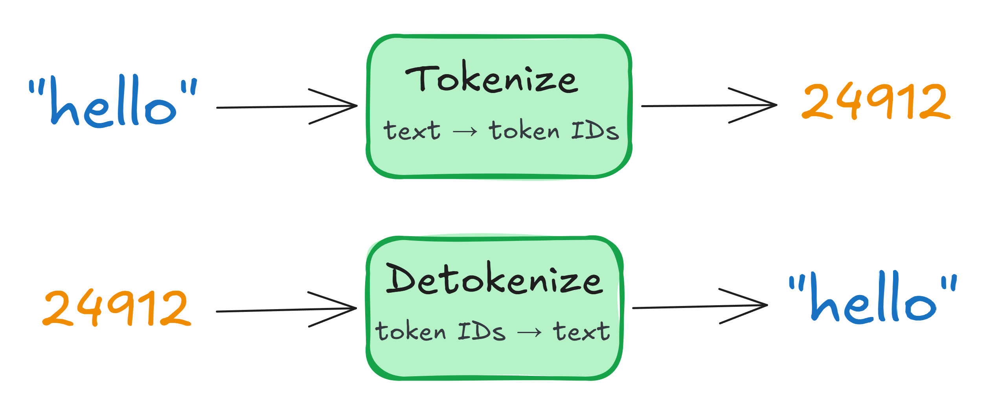
AI models have specific token vocabularies.
ChatGPT 3.5's token vocabulary

Links: ChatGPT’s entire vocabulary ChatGPT’s vocabulary: The words that ChatGPT knows and how they were chosen
"hello"

"hello" is one single token.
Links: Tiktokenizer OpenAI's tokenizer
"hello world"

"hello world" is two tokens.
Yes, that second token really is (space) followed by "world". Turns out it's more efficient to have variations of tokens with or without space or punctuation than spending token on (space).
"hello" in the vocabulary
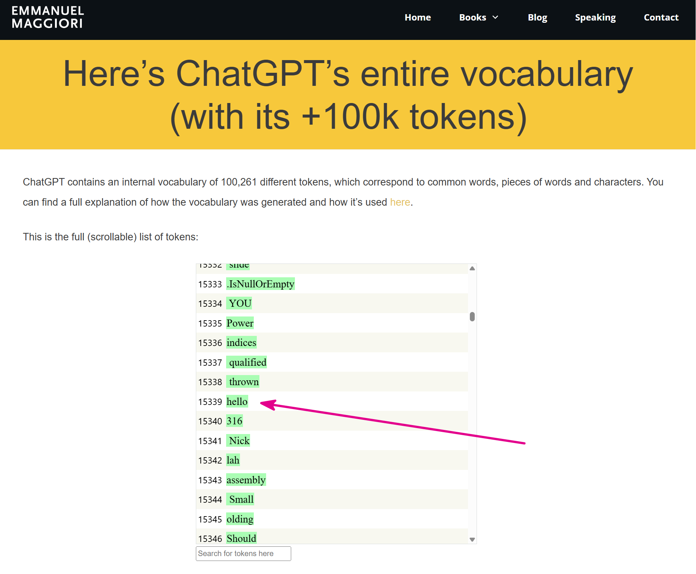
Notice that "hello" in the gpt-4o tokenizer is #24912 and in the ChatGPT vocabulary it's 15339. Vocabularies vary from model to model. The concrete numbers doesn't matter outside of the AI service.
"h e l l o w o r l d"

"h e l l o w o r l d" spelled out is 11 tokens.
This shows one advantage of the tokenization into chunks: it's simply fewer parts to work on.
"hello world from ..."

The first four words are common and have each their own token, but unsurprisingly "Flamsholt" is not common enough to be an individual token so it's made up of 3 tokens.
Token for "Flam" is 97957
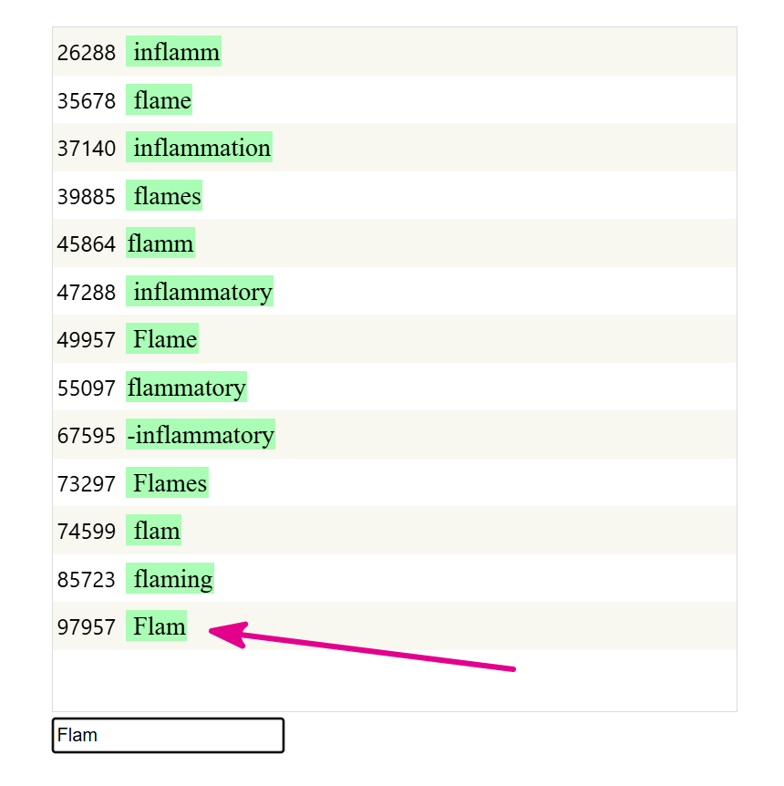
Look, there's token "Flam", in dubious company of rather inflammatory tokens.
Save space and identifies "word-features"
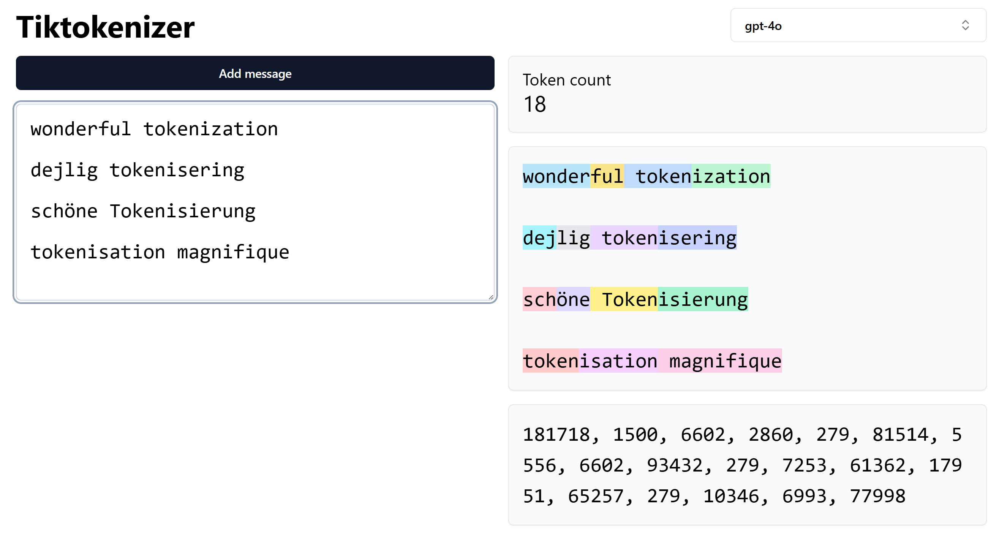
Another advantage of tokenization is that it allow identifying common linguistic "traits".
For example "ization", which is about "doing" or "producing" something.
A danish elevator "in motion"

In Danish, "I FART" means "In motion". Tourists are amused.
I fart poetry

As you can see, the four letters "fart" is always the same token. The tokens are not aware of languages at all.
Same text, same token - always
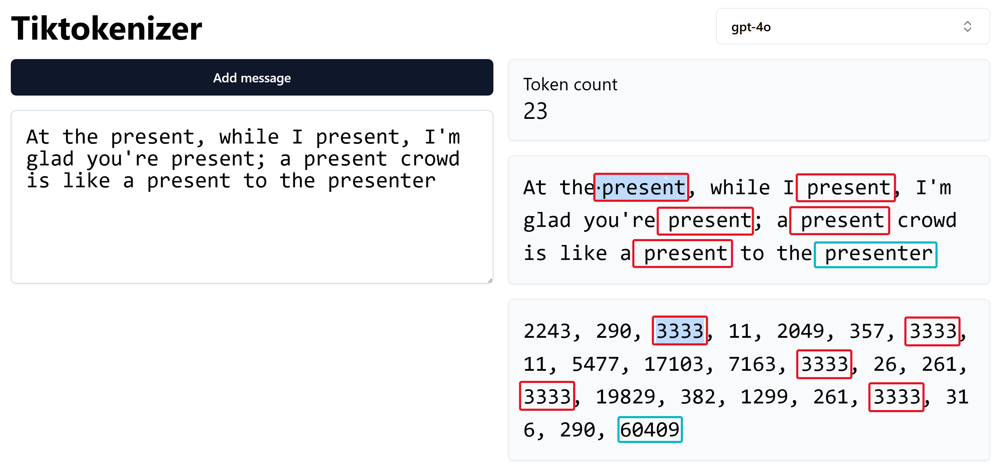
The many meanings of "present" also are all the same token.
English dominates, by sheer volume

English is "better" tokenized that many other languages, simply by virtue of English words being very common.
Here are some examples of English, Danish, Korean, Classical Chinese, and C#.
Notice how the English sentence is longer than the Danish sentence below it, but use fewer tokens.
The example, tokenized

This is what the example conversation looks like when tokenized.
Notice how markdown for bold, the double-star **, has its own token.
And **, is also common enough to have its own token.
Tokens recap

- A token is the chunk of text the LLM reason about
- Models typically have a vocabulary of 200,000 tokens
- For English, 1 token is roughly 1 word (3/4 of a word)
- Tokens are not language specific, just snippets of text Last, but not least:
- Processing cost depends directly on the number of tokens being processed
For English, one token generally corresponds to about 4 characters.
Embeddings

The LLM does not deal directly with tokens. Instead, it works on something called embeddings.
An embedding embodies the meaning (characteristica, features, traits, essense, ...) of something, anything
In AI, an embedding is vector of numbers that somehow represent the characteristics of something.
Confused? Okay, stay with me

You probably knew about tokens. Embeddings are sort of the "live" counterpart to tokens. They are very valuable to grasp the meaning of. It may feel abstract and complex so sit tight.
Specialty Coffee Association (SCA)

If you wanted to characterize coffee, you could assign a number to each of the characteristics that coffe has: its aroma, acidity, sweetness, and so on. You can compare their aspects, find the least acidic coffees, etc.
Spotify's 80-dimensional characteristics

Likewise, you can imagine designating a number of characteristics to music. Both "Lose Yourself" and "Baby Shark" score high on "tempo", but vastly different on the aspect of characteristics "defiant outsider energy".
In fact, Spotify really does characterize music using such 80 dimensions.
Imagine capturing the "essense" of ... anything

Now, imagine if you could characterize anything with suitable characteristics. For example, "laugther" is quite "ancient" while "software developer" is not very "ancient".
That's essentially what the purpose of an embedding is, to the AI.
An embedding is a token's characteristics
<img src="images/llm/embeddings/20d-kitten.png" />
An embedding is a list of numbers (also called a vector or tensor) that somehow characterises something. Sometimes called "features", as each value in the vector encodes some semantic trait of the token.
The number of nuances, characteristics, we decide to use is called the embedding's dimension. If we choose 20 characteristics then the embedding of "kitten" has 20 dimensions.
Each number is called the weight of that dimension.
Embeddings can be: Any word you know. Any sentence there exist. Any feeling you can have. Any concept, for examlpe a curious yet mildly confused audience.
More of "anything imaginable"
- The concept of the number 7
- Loneliness in a crowded place
- The entire first Harry Potter book
- A single chess position mid-game
- The smell of rain on hot asphalt
- A user's purchases on a website
- A protein's amino acid sequence
- The grammatical role "indirect object"
- The concept of sarcasm (yeah, right)
- What "London-ness" feels like
- A function's behavior in a codebase
- A legal precedent in criminal law
- The notion of "almost, but not quite"
- What 3 a.m. feels like
Every token has an embedding-vector

ChatGPT 3 has 50257 tokens, each described by a 12288-dimensional embedding
In the AI, an embedding is a large set of numbers, for example 12288 numbers in ChatGPT 3, that characterizes a single concept, for example the token "amplification" or "gazed". It may sounds a bit crazy that it could even be possible to somehow characterize anything with such shared aspects but yes, that's what's happening.
There's nothing magic about 12288 as such. It just a very fine-grained way to express many characteristics.
The example's embeddings

Each of these lists of 12288 numbers represent the core meaning of that single token. The meaning of "Please", the meaning of "tell", the meaning of "me", and so on.
All in all, this set of numbers represents that initial static context-free meaning of each single token in the sentence.
The numbers are called weights and they are constructed during the LLM's training. Right now just accept that those 12288 numbers do in fact characterise all aspects of one single token. We'll cover later how they're constructed.
Imagine an embedding as a "direction" in a hyper-dimensional space of "everything that exists"

One way to think about an embedding is as a "direction", an "arrow", in a hyper-dimensional space of every conceivable and inconceivable concept, aka latent space.
Because that is, in fact, what it is. A "direction".
Similar "meanings" have similar "directions"

The more similar two "meanings" are, the more similar their embedding-numbers will be.
So similar meanings (concepts, objects) tends to "cluster" together, in this 12288-dimensional space.
The big surprise to everybody:
We can "do math" on language

Don't worry, there will only be a little bit of math.
Example: Two embeddings, man and woman

Imagine the two embeddings of the words for "man" and "woman" as directions in this space.
They're somewhat similar because men and women as concepts are pretty similar, but they differ in the sense that "man" is masculine and "woman" is feminine.
Uncle and aunt

Now it turns out that the "difference", or "direction", between the words "man" and "woman" is pretty much the same as between the words "uncle" and "aunt".
Nephew and niece

Not only that, but the it's the same direction between the words "nephew" and "niece".
King and queen

And the same direction between the words "king" and "queen".
There's a "gender direction"

So very surprisingly, it turns out that there exist a kind of "gender-direction" in this space of meanings.
In fact, we have identified the embedding (a direction is an embedding) of the concept "the feminine version of something".
The direction for "sadness"

Turns out a direction/embedding also emerges for "sadness".
The direction for "whimsical"

And for the concept of "whimsical".
The direction for "rainbow"
And "rainbow-ness".
The direction for "spatula"

And "spatula-ness".
"___ is to Italy, what Hitler is to Germany"
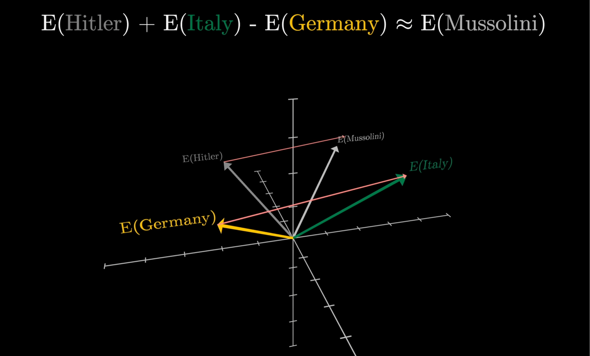
The math works so well that if you add up the directions for "Hitler plus Italy minus Germany" then you land near Moussolini.
"___ is to Germany, what Sushi is to Japan"

And "Sushi + Germany - Japan" ends up at Bratwurst.
What a surprise!
What a surprise: with the right modelling, we can actually do math on language.
Yes, it does feel crazy that by characterizing anything using the "right" 12288 numbers we can and end up with "concepts" we can manipulate mathematically.
It may sound magical, and in a way it is. And for now, just accept it as a fact that we can construct these embeddings so the math works out. You'll understand in a bit.
Embeddings recap
- Embeddings are "meanings" and that meaning can be transformed with math
- An embedding is just some numbers. Cheap to store in a database and work on.
- You can compare embeddings to figure out how similar the meanings they represent are. For instance, find a synonym by simply finding the closest embeddings to a word.
- (Covered later) The embeddings relates to a concrete AI model and are created during the training of that specific model; their numbers only make sense to that model.
One more glance of embedding as numbers

To re-iterate: An embedding can be anything imaginable, not just a word. There's surely a 12228-dimensional set of numbers that represent "the hopeful feeling that the audience grasp a complex issue you explain".
Frankly we simply don't know what the dimensions or numbers mean. They don't map crisply to existing human concepts but only makes mathematical sense. Dimension number 7 of "Please" might contribute a little to politeness, a little to interactivity, a little to something related to food, and a little to some abstract concept that doesn't map to any word in English.
There's a research field called mechanistic interpretability that tries to decompose these representations into interpretable directions. It possible to extract interpretable features, but understanding how features compose to produce behavior is still largely unsolved.
Links: - Scaling Monosemanticity and Feature Steering - Emotion concepts and their function in a large language model - How might LLMs store facts | Deep Learning Chapter 7 (3Blue1Brown)
The LLM is all about "doing math on embeddings"
The LLM

Putting the example through the LLM
The context is the input given to the LLM - here, 10 tokens
The context window is the longest input possible, typically 200,000-1,000,000 tokens
The LLM does inference by running the embeddings through a giant neural network

Two things to note here:
Why only An? Why not the full answer? Yeah, hold your horses just a bit longer, because: the LLM only deals with producing one next token. That's all it is concerned about: figuring out with which probablility any of the tokens is the vocabulary has for being the next token.
That's the second thing to note: the LLM itself just produce this set of probabilities. The mechanism that actually picks that next token is strictly speaking outside the LLM. Let's include it here to convey that the outcome eventually is a token, namely An in this case.
Links: Large Language Models explained briefly - 3Blue1Brown
A neural network

A neural network is basically just a giant, organized set of multiplications and additions.
Numbers goes in, numbers comes out

You feed it some numbers, the numbers goes through a number of steps where they are multiplied by "weights" and then added up, and out comes other numbers.
"The capitol of France is ..."

The thing is that if you adjust those small "weights" appropriately then you can shape the output to actually match an expected outcome. A sufficiently large network could for example after billions of calculations produce a number that represent "Paris" if we feed it numbers that represents the sequence "The capitol of France is".
And that is in fact what the LLM does. But let's start at the beginning.
The LLM's objective: find the likely next token

Let's focus on this example: find out what should follow "That which does not kill you only makes you ___".
Raw probabilities for words following "you"; no good
"That which does not kill you only makes you can" - hm, that's not right

Just choosing the statistically most likely next word to follow "you" won't work. We need to look at more context to decide what naturally shoould follow that "you". Frankly, we probably need to look at all that comes before that "you" to properly decide on what should follow. That's a tough task for longer sentences.
Enter: The Transformer, in 2017

The invention that made all of this possible, is called The Transformer.
"Attention is all you need"


The 2017 paper "Attention Is All You Need" by Vaswani et al. is arguably the most consequential piece of computer science research published in the 21st century.
Today, the paper sits at over 200,000 citations, making it an absolute statistical anomaly in scientific literature.
It is the Genesis block of modern AI. Without it, there is no GPT-4, no Gemini, no Claude, no Stable Diffusion, and no AlphaFold. It transformed AI from an academic field of hyper-specialized, rigid pipelines into a unified era of generalized foundation models.
Links: Attention Is All You Need
The Transformer can figure out the next token

Let's see how that works - here's the input again
Let's pretent there's one token per word. Every token in the input sentence starts out as exactly one specific embedding that express the meaning of that specific token. The meaning of "Please", and "tell", and so on.
(Note: Positional information (1, 2, 3, ...) is added into each individual embedding, typically using RoPE (Rotary Position Embeddings) which "rotates" the vector in 2D spaces in each layer.)
First, all embeddings "pay attention" to each other

Every embedding gets influenced by every embedding token before it. They "absorb" the meaning of all those other embedding, influenced also by the position. The first "you" and the second "you" come from the same token, yes, but by virtue of their position they don't carry the same meaning, i.e. they don't start out as the same embedding-values, and they therefore influence the other tokens in each their way.
For a full 1M context-window this means that up all 1 million embeddings pays attention to every other of the 1 million embeddings before it. That's the order of a million times a million calculations.
Then, a neural network act on the influenced meanings

This is where the model's built-in training shapes the meaning of the embeddings.
Focus on the strong signals

More math dials up the contrast, in a way: it boosts the strong signals and suppress the noise.
Now do this again, and again, ...

Gradually molding the meaning of the final "you"

Let's do it 96 times (attention layers)

175 billion small "weights" are involved

Final numbers are the desired "next meaning" outcome

After going through 96 trips of embeddings influencing each other, the final vector has absorbed all the relevant meanings of the entire context and now reflects what the following embedding "most likely looks like".
Find next token by similarity-comparison
Compare the final expected embedding to the embeddings of all tokens in the vocabulary (e.g. 200,000 tokens) by taking the dot-product, which compares the two directions.

Then, it's "simply" a matter of finding out what tokens are most similar to the desired meaning.
Is it "dancing?" No. Is it "sw developer"? No. Is it "stranger"? That one's pretty close. "Is it stronger"? Yes, that's the closest known token.
Choose the final output token

The final output token is chosen based on the probability of the closeness to the final vector-values. Here, "stronger".
Back to "Please tell me: what is an LLM?"
For this context, the LLM will produce token "An"
For a full sentence: repeat until LLM says stop

Keep on adding the produced token to the context and go another round through the LLM, until the LLM emit a special "I'm done"-token.
85 roundtrips for 85 tokens

Yes, tokens are really generated one by one
That's why output tokens are typically 5 x more expensive than input tokens.

Each token really is generated by a completely independently pass through the LLM that choosing the most likely next word to come after the context.
However, studies have found that the LLM actually does latently plan for the continuation that follows this single token; the pass that produced "An" is poised to very likely produce " L" and "LM" afterwards.
The field of study is called Interpretability and the weights that seem involved in such "thoughts about future planning" is dubbed J-Space.
Links: Interpretability A global workspace in language models (J-space)
The LLM/Transformer recap
- It makes predictions about the input (context) you pass to it
- It's really good at patterns; "this looks like that".
- The work continue to be in the order of N^2 for N context-length because of all the attention, so we can't just keep cranking up the context window length. The cost will likely remain "per token" for the foreseable future.
- A successor for Transformer-technology is not around the corner
- So the way to get more out of the LLM is: smarter ways of managing the context, not more context
Some newer architectures use Mix of Experts (MoE) for dividing up the work.
Links: Inside DeepSeek's DSpark
Effort and Cost
Let's briefly talk about the amount of work that's involved in producing tokens and the cost of it.
It's one token, what could it cost?
Harry Potter ~ 100,000 tokens


Let's say we tokenized and fed Harry Potter through the LLM, and had it produce the next expected token. What would that entail?
Specifically for Harry Potter: People have tried that and the resulting stories are incredibly bizarre hybrids. The AI might invent a plot where Harry returns to Hogwarts, but it will subconsciously add in details from the Chamber of Secrets anyway; like renaming the Basilisk to something else but keeping the exact structural cadence of the original sequel.
100,000 context tokens in, 1 token out

How much math does one "token out" really need?
Actually, about 1,200,000,000,000 multiplications

FLOP is short for Floating-Point Operation: a multiplication of two numbers
Enter: the NVidia B200 GPU
The NVidia B200 GPU is not your grandma's GeForce graphics card, for sure.

4,500,000,000,000,000 FLOPS/sec
The NVidia B200 GPU does 4500 trillion FLOPS/sec.
Pedal to the metal

1,200,000,000,000 FLOPS to produce 1 token
4,500,000,000,000,000 FLOPS/sec is B200 capacity
One 8 x B200 cluster with Claude Opus can output serve 40 tokens/sec.
Or rather, it depends on the length of the context:
- 4,000 token context: 50 users at 60 tokens/sec
- 100,000 token context: 10 users at 40 tokens/sec
- 1,000,000 token context: 1 user at 15 token/sec
Ballpark cost per output token (June 2026)
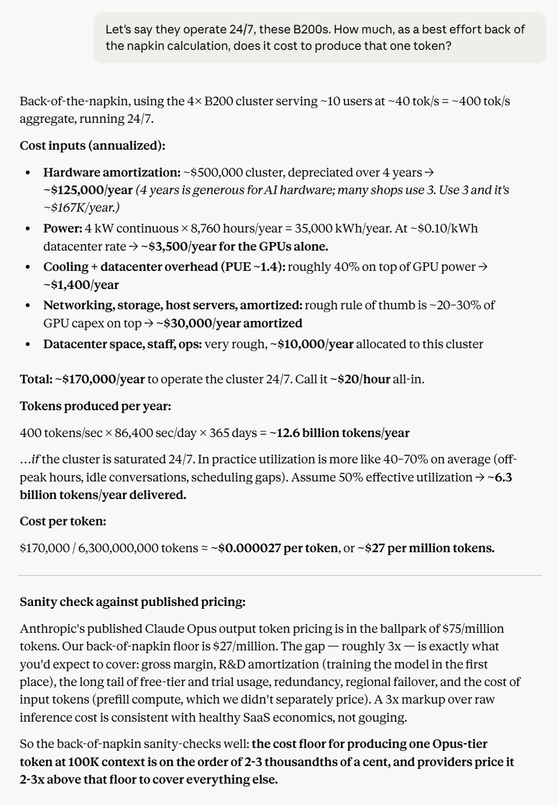
One 8 x B200 cluster costs $500,000
- Ballpark running cost, all-included: $27/MToken out
- Claude Opus is priced at $25/MToken

The business cost estimation, all included, was rather surprisingly close to the sales price.
The 4 x B200 cluster

The NVidia B200 GPU comes in clusters of four.
Clusters comes as trays
Trays goes into racks
Racks goes into aisles

Now you have a datacenter

Why Graphics Cards (GPU)?
Transformer's superpower: all tokens at once

GPU: master of parallel computations

That's why Mac Mini and Mac Studio are so sought after: their GPU can use the full on-board RAM.
NVidia stock price

And why NVidia's stock price has soared.
Links: The World's Most Important Machine - Veritasium
Training
We've seen how the LLM using pure math can produce "the likely next token".
But how do they learn that?
Are all AI models the same?

Admittedly I coached ChatGPT into dialing up its "chatgppt-ness" to the max before asking this question.
And honestly? It worked.
Frontier Labs and Models
The big players are called Frontier Labs and their models are called Frontier Models
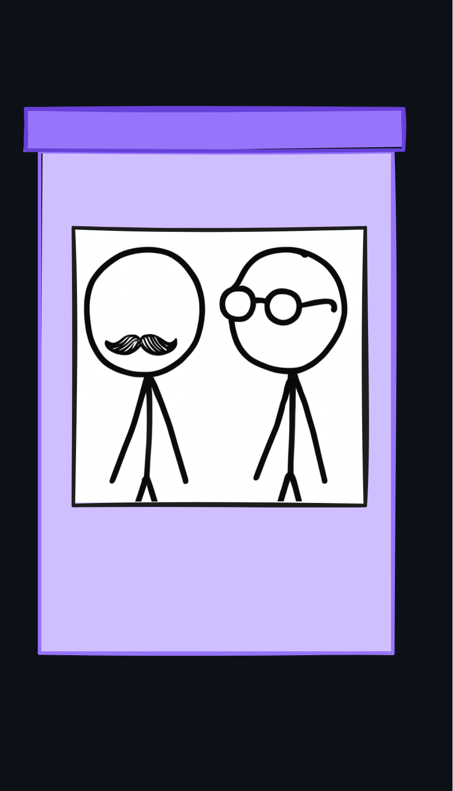
 ChatGPT by OpenAI
ChatGPT by OpenAI
 Gemini by Google
Gemini by Google
 Claude by Anthropic
Grok by xAI (Elon Musk)
Claude by Anthropic
Grok by xAI (Elon Musk)
 Meta AI by Meta (Facebook)
Meta AI by Meta (Facebook)
 Vibe by Mistral AI (French)
Vibe by Mistral AI (French)
 DeepSeek by DeepSeek (Chinese)
DeepSeek by DeepSeek (Chinese)
 Perplexity is an AI Wrapper, not its own AI Service
Perplexity is an AI Wrapper, not its own AI Service
 Copilot by Microsoft is also an AI Wrapper
Copilot by Microsoft is also an AI Wrapper
How models are trained

Pretraining is where the model learns about language. Looking at vast amounts of text, it learns to predict the next token — nothing more. The result is a powerful but raw capability: it knows how language works, how facts relate, how arguments are structured. It has no personality, no values, no sense of what a "good" response looks like.
Post-training is where the model learns what an appropriate response is. This is where values, tone, refusal behaviors, and personality get baked in.
Pre-training on "all sentences in the world"

The training material is pretty commonplace for all frontier models nowadays. It's in the order of 1-5% of Google's index.
Model and embeddings are born via training
<img src="images/llm/training/training-example.png">
Backpropagation:
- Run tokens through the network like at generate
- Paths to the expected token are rewarded, others are punished
- Adjust the full network, back to the embeddings
- Causal masking trains all sub-strings, too
- Train on a gazillion texts
Finally, rather unceremoniously: this is how both the model's weights and the embeddings get their values: by training immensely to find the right balance where all training texts produce the expected next token.
It works like this, in principle:
- A well-known sentence minus the last token is passed through the full model network, all 96 or so layers.
- The last token is expected as the output; here "stronger"
- All the paths that produced that token get dialed up a notch and all others dialed a bit down - all back through those 96 layers, all the way back to the embedding itself
- Now simply repeat this a gazillion times with the entire training corpus.
- Eventually the network and embeddings, which were initially random, end up with values that generally produce the "likely next token" for all those trained sentences.
That's how the AI model and the embeddings are born.
And it's amazing that it works, and that it ends up producing embeddings that had a notion of "gender" and "sadness" etc.
Backpropagation math is ...ok, let's move on...

It's taken some effort to figure out this math, but it's pretty simple to execute.
A trained model = embeddings + weigths

A trained model therefore consists of two parts:
The embeddings, meanig the vector of numbers for each of the tokens.
And the AI models many billions of small factors, weights.
Once the training is completed, the embeddings and weights are frozen, never to be changed again. Not until they are used to kick-start training of the next model.
Pre-training cost
- From scratch for a new model
- it costs $200M-$1000M
- it takes 4-8 months
- From an existing model
- it costs 1-10% of full training
- it takes weeks or months
Pre-trained models are quite similar

Pre-trained answers are pure "auto-completions"
No judgement, no reasoning.
It's just a statistical prediction-machine, exactly like an auto-complete.
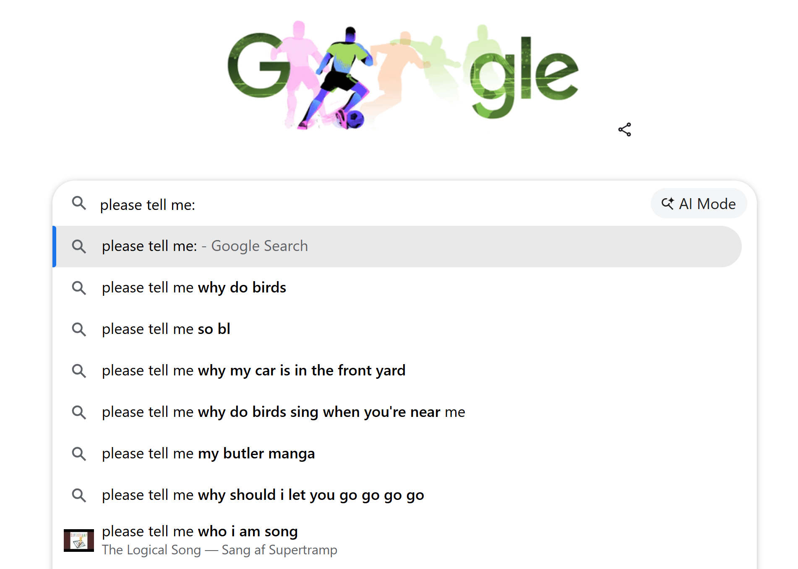
Post-training is what shapes the model

Different personalities
ChatGPT – Structured explainer
Gemini – Diligent researcher
Claude – Honest advisor
Grok – Radical truth-seeker
Meta AI – Powerful engineer
Mistral – Efficient European
DeepSeek – Censored thinker
Post-training: reinforce the desired outcomes

Reinforcement Learning by Feedback
RLHF - Reinforcement Learning from Human Feedback (declining)
RLAIF - Reinforcement Learning from AI Feedback (growing)

Frontier labs almost universally outsource the bulk of RLHF annotation rather than hiring raters directly. The main intermediaries:
- Scale AI/Outlier — the dominant player, operating as an end-to-end data engine. Outlier handles LLM annotation, Remotasks handles visual/multimodal work. Scale is OpenAI's preferred fine-tuning partner and has also worked with Meta, Google DeepMind, and others. Taskmonk AI
- Surge AI — Anthropic's primary RLHF provider, with ~50,000 expert contractors. Also used by OpenAI and Meta. Taskmonk AI
- Invisible — shifted from executive VA services to RLHF work for labs including Microsoft, Cohere, and Mistral. Routes model outputs through trained raters who score completions and rank outputs. Sacra
Outlier alone runs a network of 700,000+ contractors globally. The work is heavily gig-economy in structure.
Pay ranges from $15/hr for generalist annotators up to $500+/hr for domain experts like medical fellows and legal professionals. Invisible charges labs $30–45/hr for annotation work while paying raters $15–20/hr.
Each major frontier AI lab spends approximately $1 billion per year on human-generated training data, according to a 2025 Time Magazine investigation.
Example: Claude's Constitution

In order to use AI for performing this Reinforcement Learning, Anthropic has written down their intentions for how Claude should behave in what they call Claude's Constitution. It can surely be read by humans, but it's primary target is actually to be read by AI's themselves to help decide whether answer A or B is most in line with Anthropic's values.
Links: Claude’s Constitution - Anthropic OpenAI Model Spec
Expresses Claude’s "core principles"

Claude's constitution defines a priority ordering that the model should strive to follow:
- Broadly safe (supporting human oversight)
- Broadly ethical (good values, honesty)
- Adherent to Anthropic's principles
- Genuinely helpful
"Don't foster excessive engagement"

For example, Claude has been explicitly trained not to "foster excessive engagement".
You may question whether Claude really does adhere to these principles. One piece of evidence comes from the AI jailbreaking community, which is maximally adversarial and has zero loyalty to Anthropic; findings by such groups has not found behavior that is inconsistent with the constitution.
So the postulate that "It just wants to please you" doesn't line up with Claude's stated objectives.
"New model is 36% more ..."

The stated principles in the constitution is also how Anthropic can objectively measure differences in behavior when new models are released: adherence to their stated principles can simply be measured.
Links: Model system cards
ChatGPT - rules over principles

OpenAI has something similar, but seem more focused on "rules" than "principles".
ChatGPT spec example

Gemini training guidelines

Google has also published training guidelines for Gemini.
Are models different?
Yes, indeed
Same facts, different values and behaviors

- Anthropic wants Claude to reason from principles — no rulebook needed
- OpenAI wants ChatGPT to follow their spec — rules written down explicitly
- Google wants Gemini to behave correctly — but via unpublished rules
- Meta wants Llama powerful and open — open weights, few restrictions
- Mistral wants Vibe capable, open, and European — compliant, not principled
- DeepSeek wants its models helpful and harmless — as defined by the state
- xAI wants Grok to tell the truth — no censorship, no moralizing, no wokeness
Models also have variations
For example: Haikku, Sonnet, and Opus are really three different models.
They run on different hardware, LLM has different sizes, e.g. number of attention layers.

For example, the Claude family are physically three different models: different size, training, speed, cost, strengths.
A mental model for the LLM
I'd like to present a mental model for the LLM that I myself have found useful in thinking about how it works, and therefore how best to handle it.
"Once upon a ..."
"It's just a fancy autocomplete"
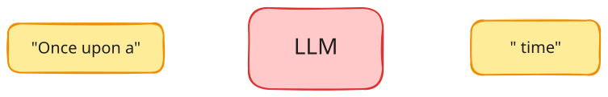
Yes, saying that the LLM is "just a fancy autocomplete" is objectively 100% correct. It really is. It completes and it does so automatically. Ergo, it's an autocomplete.
Buf "just a fancy" is doing a lot of heavy lifting in that sentence. Not unlike saying humans are "just a fancy mix of cells".
Not "answer"; "most probable continuation"
-
You give the model a context, which is practically just a text.
-
The model can do just one thing: it has seen so much text that it can produce next-word-probabilities for any given context. Meaning, it can continue the context.
-
That means the context is everything. It is the only thing the model sees. Every word in the context nudges the model's continuation in some direction, all based on trained patterns.
-
So you don't "tell the model what to do": you give it a context so that what you want to come next becomes the model's most likely continuation.
Think "context → next", not "question → answer"
Words go into context with the intent of steering the next prediction toward what's useful for you. That's the whole game.
The model has no other input to go by for dealing with your tasks than the context you give it.
Predictions from seen patterns

The neural network is really good at making predictions based on patterns, even combinations of patterns.
Context determines the "likely next text"
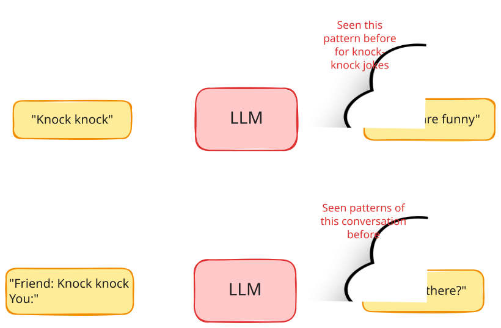
Is it just the two words "Knock knock" or does it look like a conversation? These are different patterns.
Some "reasoning" is maybe "just a pattern"
What might look like "reasoning" is really "pattern matching"
Even math is a pattern
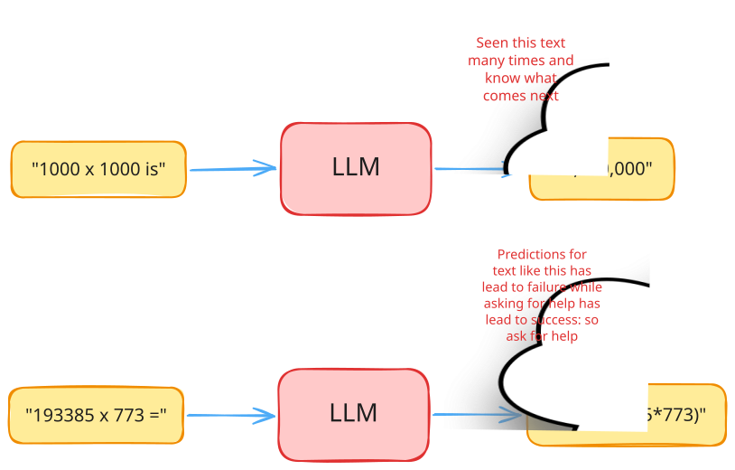
Even simple math can be trained to be recognized.
But not harder math. So what's up with this "calc()" method call? We'll get to that next.
What "a pattern-prediction machine" implies
- Plain language with regular words will steer it in the desired direction via pure pattern-matching of similar conversations seen during training
- Adding examples often gives way better output
- Be descriptive and straightforward, so the prediction has something to work with
The Transformer architecture is an incredibly impressive feat, no doubt about it.
Mechanically though, it truly is "just" a prediction machine.
But hey, maybe we humans are also just prediction machines?
Trained AI model recap
- You give it a string of tokens, aka the context
- The model produce a response by running that context through the Transformer
- The models have been post-trained differently for different desired behaviors
- The model can only reason about the context
- It's all just math, fixed at the time of training
Let's see what Claude itself said

If you find this interesing then I can remommend this 2-hour video of Andrej Karpathy building a small GPT model, fully.
The whole thing is only 600 lines of Python code: 300 for train.py, 300 lines for model.py.
Let's build GPT from scratch (2 hours) Let's reproduce GPT-2 (4 hours) Github repo for nanoGPT Deep Dive into LLMs like ChatGPT Hands-On-Large-Language-Models
AI Agents
Now that we've seen how the LLM works, and learned a bit about tokens and embeddings, it's time to take a step up and see how we actually can use the LLM. How do we interact with it, for starters?

So, do you speak to the LLM?

No, you always speak via an agent

The agent knows who you are. it knows your preferences. It adds extra context to every conversation you have with the AI.
For instance today's date, your name, your language preference, the most relevant facts it knows from earlier chats. Also any custom instructions, like skills, that you've added to your agent.
By the way, the word "agent" is so over-loaded. Here it simply means "the program you use to talk to the AI with".
The AI-service is "the AI"

The LLM (Large Language Model) is the brain of the operation. As we've seen, the LLM is functionally simple: it only produce one token at a time and it can't "do" anything. So it needs some extra surrounding functionality to be really be useful, like be able to complete a full sentence, browse the web, read documents, etc. It needs some body, some hands and eyes. The AI service provides that body.
You 💕 agent; the AI is completely impersonal

The agent is your buddy. It holds your information, your files, your custom instructions, etc.
The AI service itself knows nothing about you, except that you're allowed to login and use it.
The parts and their many confusing names

You may be thinking: "But oh no, I'm just using Copilot in Word or chatpgt.com in my browser - not an agent".
Well, yes you are. Those are both agents. An agent is simply the tool you use to talk to the AI service with. It's a program, an app, a website, or it's an agent baked into some other app, like Outlook. The agent is also sometimes called "AI client" or "AI harness". To the AI-service it may present itself as "the assistant".
It's not an autonomous self-running James Bond-like entity. Well, except unfortunately those do exist and they're also called "agents", which is mighty confusing.
"LLM" and "AI model" are synonymous when we're talking about generative text AI; all AI models used for generating text (ChatGPT, Claude, Gemini, Grok, etc) are LLMs.
Agents comes in many shapes

gemini.google.com on the web is an agent

So is Rovo, in Atlassian sidebar

And Rufus, in Amazon sidebar
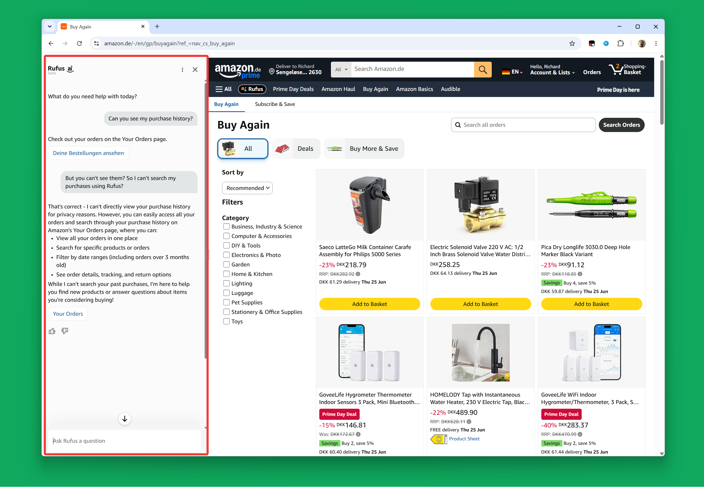
And PDF remediate, inside Siteimprove

In Visual Studio Code the agent-ness is many places
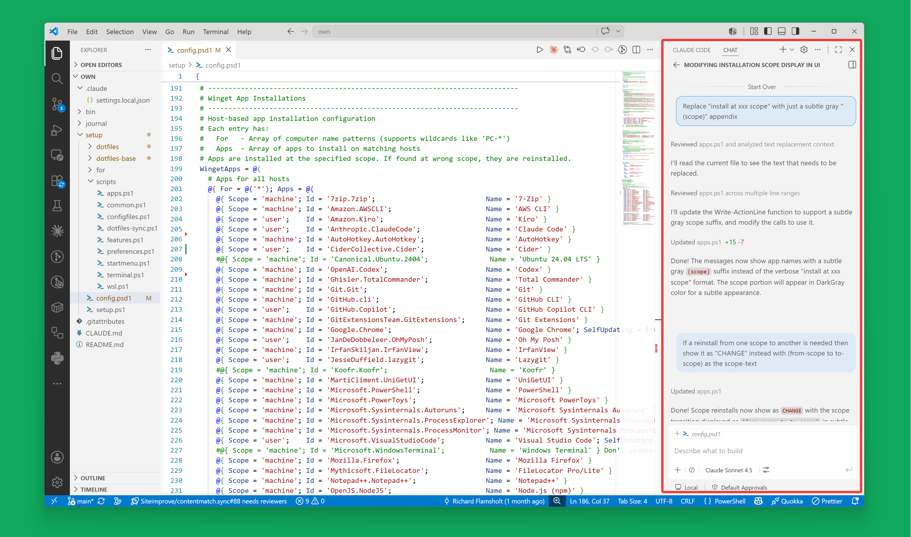
Google's agy, in the terminal/CLI

CLI means Command Line Interface, i.e. in a text-based terminal.
Claude Desktop is a dedicated agent-app

Not in some unrelated app, not in the browser - no, in its own app, that can for example read and create files.
Every agent is its own silo

Generally the only thing that the AI service knows about you is your name, identity, and account-information; your subscription plan, usage, etc.
Everything else is something that the agent provide you: your profile, memory files, skills, mcp servers, etc. And also the agents behavior: system prompt, tone, modes, language, etc. It all lives in the agent.
That explains why you, say, can't see skills that you've added online at claude.ai when using Claude Code in the terminal. Or even see the same skills when using Claude Code in Linux and Windows. They are simply different agents and each comes with their own capabilities and settings.
And yes, it's maybe a tad unexpected that "claude.ai" is not actually the AI service as such, but in fact just an agent just like Claude Code in the terminal is.
At least that's how it usually is today. It's changing slowly, it seems, and that's nice because it's annoying that your settings etc follow the installation, not your profile. It's just not an area that has gotten a lot of attention.
So now you know why the settings, like Skills, you set online at claude.ai are not available in Claude Code.
Where do the parts live?
Frontier Models live in a datacenter
The Frontier Models (FM), ie Claude, Gemini, ChatGPT, etc, always lives in their lab's data center.
Typically, the agent is web or terminal/app
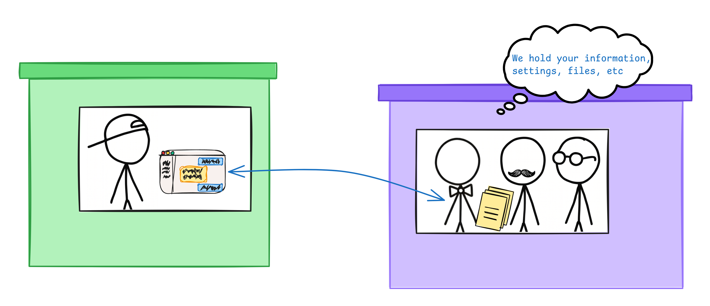
Browse to chatgpt.com, claude.com, etc: - Chats and settings are on the website - You can do a lot: chat, make images, documents, use online tools, etc
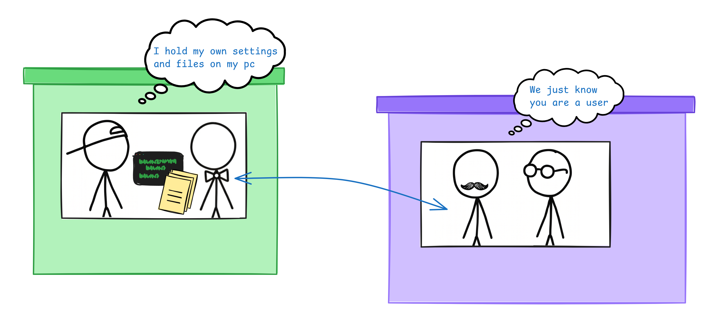
Install claude, gemini, opencode, etc: - Chats, settings, files are all on your pc - Better control over the AI - Text only, which can feel like a barrier
Claude Cowork is actually a real stand-along app that works on your local pc, just like in the terminal.
Alternatively, in apps or fully self-hosted
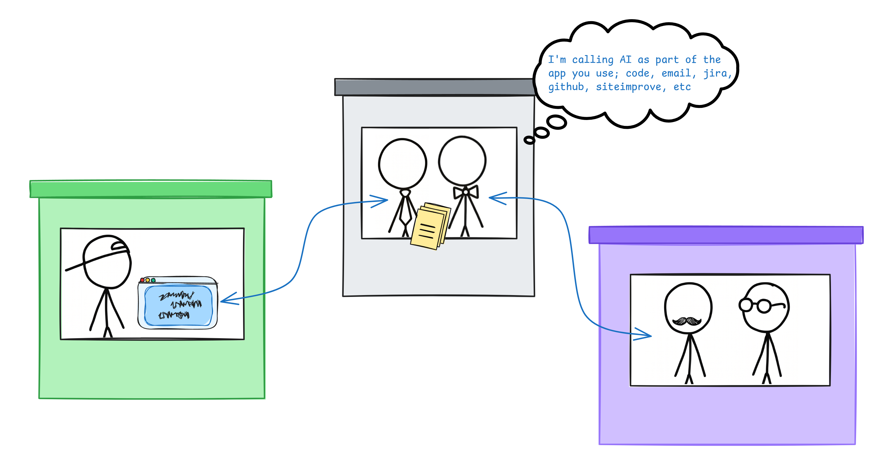
Use AI indirectly through apps you use: - Very little control - Chat-knowledge still comes in handy; you can maybe ask "list your tools"
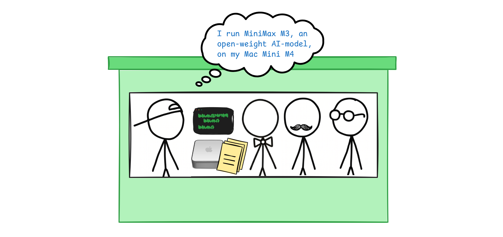
Run open-weight full LLM on your pc: - Gives you full control, eg for training - Free to run, but expensive to run well
My personal AI-journey
Chat, copy-paste, embedded, now terminal

I started chatting just in the browser, of course. And I still do, by the way.
Next I started writing code with the AI, but copy-pasted the code into my code editors to compile and run it.
Then I started working with the AI inside the code editor for true cooperation. It was a relief and performance-boost to have the AI work directly on my files in my folders.
Since late 2025 I'm now exclusively coding by running the AI in a terminal and having an editor open with the files. Much bigger window to engage with the AI in, much better control.
I still use the browser chat

For anything that doesn't involve files I still just chat in the browser.
For this presentation I created a project in claude.ai for all the research. It has over 60 chats and I've prompted about 18,000 words which is about the length of Shakespeare's Macbeth. I'll leave it to the bard to comment on my efforts:
It is a tale Told by an idiot, full of sound and fury, Signifying nothing.
The AI Service
Now we know how to "talk to the AI Service": via some agent app.
But what functionality does the AI Service actually add to the brain, the LLM?
That's the final piece of the puzzle, and it's much less complicated that the LLM itself. But you'll find that knowing about how the LLM works, knowing about embeddings for instance, will be quite helpful now.
This is the part where we finally unlock the concrete functionality you use daily: chatting, uploading files, having the AI work on that Confluence page using an MCP server, using a skill, etc etc. It all comes together now, and many parts are less mysterios than you might think.

What does the AI service offer?

The full functionality is quite lean:
- It can read files you upload
- It can chat with you
- It can "think harder"
- It can use tools
- It has caching and safeguards
That's it - and remember:
It knows nothing about you personally
All AI Services generally looks like this

Remember the LLM loop?
The LLM loop is the centerpiece

It's all about those embeddings
Remember, the Transformer works on embeddings
Text maps to tokens, each token has an embedding in the model
But ... what about files, like PDFs and images?

Files

Because the LLM only works on embeddings we will, somewhat surprisingly maybe, first take a look at how files are handled by the AI service. How does it even understand documents or image?
Files are also turned into embeddings

Images

Images are not handled via OCR (well, maybe a bit)

Images are understood in small patches

VLMs (Vision-Language Models)
- Everything visual ("claw of a predator bird") is learned from datasets of image+text
- VLMs also learn characters through that training
- Images are processed in patches (eg 24x24 pixels) to individual patch embeddings, which are then mapped into the same embedding-space as text
- Same approach for video and audio, if supported
- A hybrid approach has gained traction, using OCR for pure-text-looking images
- The end result: The model just receive embeddings, bits of "meaning". It doesn't know or care if they come from text, image patches, interpreted images, possibly OCR. The the LLM, it's all just embeddings.
- Note: A screenshot of text can easily result in 10x more context than the raw text
Modern Multimodal LLMs (like GPT-4o, Gemini, and Claude) generally do not use a separate, traditional OCR engine (like Tesseract or Google Vision OCR) in their standard workflow. Instead, they treat text recognition as a purely visual task.
Whatever approach, embeddings comes out

Whatever the image processing does, embeddings is what comes out of it.
A closer look at multimodal embeddings

I suspect that the usefullness and power of embeddings, not least multimodal embeddings, might well come as the biggest surprise to most of you.
Remember, embeddings characterizes "something"
Multimodal embeddings go beyond text

Some lab trains their models on text, images, video, and audio together, to form a "unified embedding space" where for example the word "kitten", images of kittens, and sounds of kittens all are comparable embeddings. That kind of training is very expensive, which is why this is a very recent functionality (from spring, 2026).
A single embedding, however, is cheap to calculate. The effort is in the order an LLM producing one token, which is close to what's actually happening. You calculate it once and then you can store it (it's just numbers) in a database. From then on you can do easy and cheap similarity-matches for the embeddings.
(Of course, they should also store a reference to the thing they are an embedding of.)
The similarity-match is also called cosine similarity. And you will want to store the embeddings in a specialized database called a vector database that is optimal for that exact similarity-matching.
The dimension of a multimodal embedding is typically smaller than for text.
Links: Gemini Embedding 2: Our first natively multimodal embedding model Unleash the power of vector search and multimodal embeddings in BigQuery What is a Vector Database? Powering Semantic Search & AI Applications
The unified embedding space

Within the unified embedding space you can compare text, images, video, and audio to see how similar the concepts they represent are.
Example: image-similarity
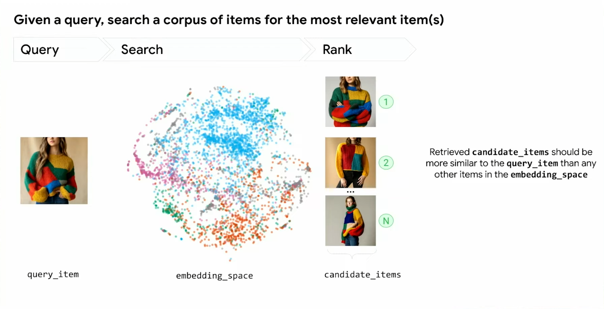
The query can be the embedding for an image.
"Simply" compare the embedding's similarity

Cosine similarity will show how similar two embeddings are.
A world of ideas for comparing any two things

New tech (spring 2026) with limitations

The technology is rather new and there are some restrictions on what you can calculate embedding of.

Google's offering is called "Gemini Embedding 2"

Amazon's is called "Amazon Nova 2"
PDFs and other documents

Now let's look at documents.
PDFs are handled really well. The AI services gets better and better at handling documents, like eg zip-files or Word- or Excel-files.
Documents doesn't really introduce any new functionality: they contain text and images and those parts are either extracted, of the document is rendered in full and then image-recognized.
Should you convert PDFs to markdown yourself?

PDFs are a wilderness. They're really hard to extract text and structure from - much harder than HTML. They contain binary parts, the internal structure is a jungle beyond description of stacked objects, drawings, and text parts.
Because of that there's a beliefe that passing a PDF raw to the LLM has a masive overhead. So the sentiment everywhere is: "Of course you should extract the text yourself first, it's absolutely foolish not to."
Or is it?
Think about it: Is it reasonable to think that you, on your computer with some tools, can achieve a much better result than Anthropic, Google, and OpenAI can when it comes to grabbing the meaning out of PDFs? Not just plain text but also images, structure, tables, footnotes, etc?
Experiment: 10 PDFs, compare markdown vs raw

I ran an rigorous experiment where I examined how Claude, Gemini, and ChatGPT dealt with 10 PDFs of varying sizes and content. They all understood the PDFs really well, but their approach was really surprising.
It depends - but generally, probably don't bother
- ChatGPT did text-extraction completely similar to what I did locally.
Raw PDF and markdown had practically the same token cost.
Verdict: No need for local conversion to markdown - Gemini processes PDFs as pure vision input at a flat rate of 258 tokens per page!
That was 3-18x fewer tokens than converted markdown.
Verdict: Give Gemini raw PDFs, not converted markdown - Claude also renders and treats each page as an image, but not at a flat rate.
Token-usage for raw PDF was 2-6x more than markdown.
Verdict: For Claude, it can pay off to do local markdown conversion.
Google's Gemini behavior was a surprise. It's even a very deliberate decision by Google, based on research. They slice the image up in 24x24 pixel squares, 16 patches per side ie 256 patches in total, each needing one embedding. Plus 2 more for some reason, for a total of 258 embeddings in the context. That's hard to beat and the PDFs were really well understood.
Links: An Image is Worth 16x16 Words: Transformers for Image Recognition at Scale (Dosovitskiy et al., 2020) PaLI-3 Vision Language Models: Smaller, Faster, Stronger (Chen et al., 2023)
Docs and images recap
By the time the LLM goes to work, everything in the context has been converted into a big pile of embeddings, small bits of meaning.
Chatting

With files and images out of the way, let's look at actually chatting with the AI service.
Let's remember: You give the LLM a string of tokens, aka the context, and it will produce a response based on the model's baked-in training by running that context through the Transformer. Pure math and trained knowledge.
That is all the LLM can do. It can't browse the web, multiply two large numbers, read a file, remember anything about you, no nothing. It can only run the context through the Transformer to produce a response.
Your prompts goes into the context
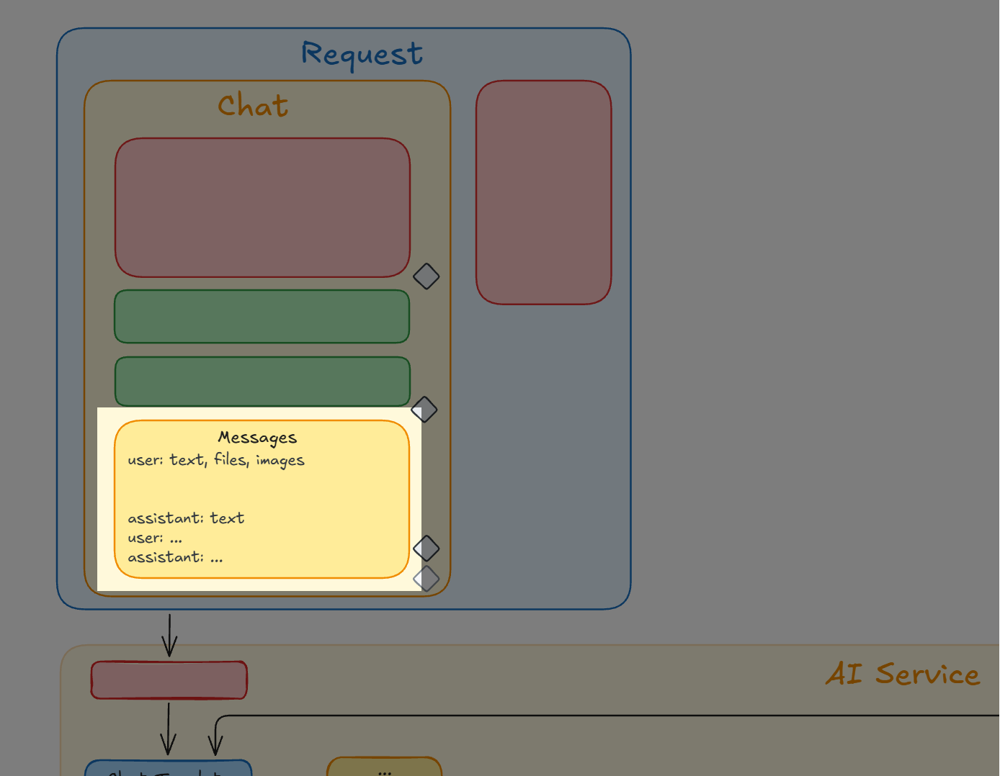
Prompt, instructions, message - many names for the same thing.
A context has many parts. Here we'll focus on just the messages you send the response you get.
Everything you send - text, documents, images - is shipped as these user-messages. Binary stuff is base-64 encoded.
Let's continue the example chat

You write, the AI responds

You respond again - but now what?

Question: What is sent to the AI?

Option B: the full chat

The full chat is sent to the AI
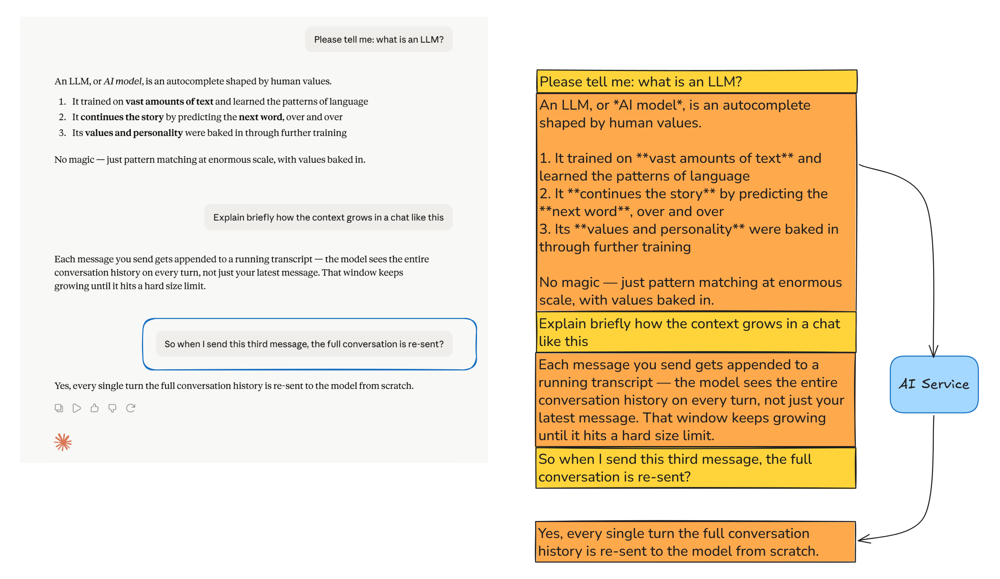
The full chat is always, always sent to the AI

Let that sink in: every message you send, resends the full conversation.
Why? Because the LLM need the full context
The LLM can only reason about the context it is given.
It does not, it cannot, know or reason about anything else than what is in the context.
The LLM is completely stateless.
You want it to know about X, beyond its trained facts? Then X must be in the context.
No links, no outside preferences, no memories, including from earlier chats:
the context is ALL the LLM can respond to.
The context after 3 prompts

The context after 10 prompts
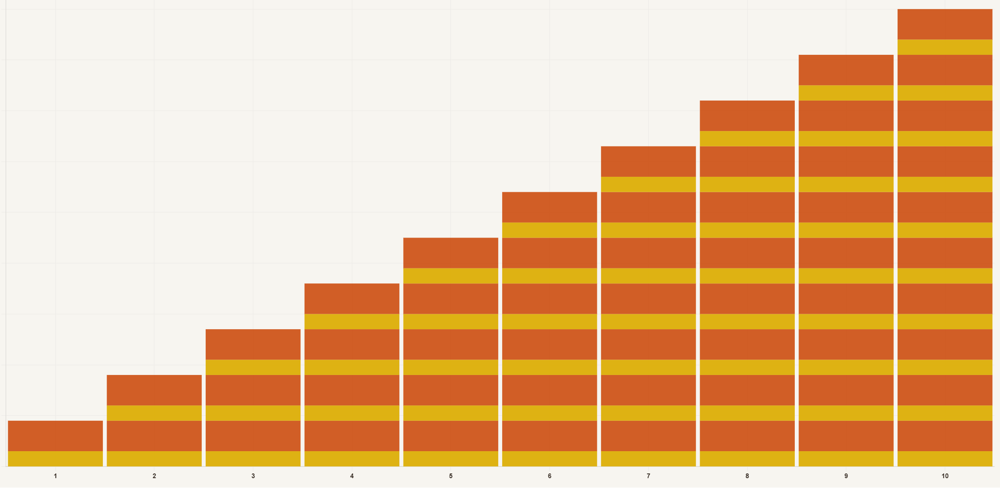
The context after 50 prompts

Total: 1+2+3+...N = O(N²) messages

The total tokens you pay for is added up for every turn, so you use more and more tokens at every turn.
Save tokens: clear and compact
The best way to save tokens is simply to not keep on dragging the entire conversation along all the time.
Clear: wipe all, get back to scratch

"Clear" simply means wiping the entire chat and starting from scratch.
Compact: keep a summary of the chat

"Compact" means that the agent ask the LLM to summarize the chat and add that summary as a first message.
Your best token-saving friends: clear and compact
- In terminal agents write
/clearor/compact - In web agents, just start a new chat; compact may not be an option
- compact can be preferable, as it doesn't use that many more tokens
- If you don't clear or compact, the agent will auto-compact for you
- The token-cost-saving story is more complicated; more on that later
Chatting recap
- The entire conversation is always sent, every time you write anything to the AI
- Use clear and compact to keep the context lean
"Think harder"

What could "think harder" mean?
-
Maybe the model's billions of weights can be tweaked to somehow "think better"?
Hmm, no - the LLM weights are constant numbers, frozen after training. -
So maybe thinking call on some "bigger AI", stashed away in the back room?
But then how could the biggest models think harder too? No, the hardware and model is fixed. -
Thinking could mean the LLM plan better when asked to think harder?
No wait, the transformer is pure math, acting the same way for the same input. -
Ah, now I have the full picture. Is what we do here, refining the output, thinking?
That's a bingo!
Thinking is: think, append, repeat

Chain of Thought
Thinking is called Chain of Thought, or CoT
The feature has many names (e.g. effort) but always works this way:
1. Inject a special
Example thinking blocks - "No, wait"

Thinking generally produce a better result and the model can catch itself if it's going down the wrong path.
However, it can possibly also strengthen a misbelief.
Thinking typically improves the response

Without "Extended thinking", the LLM failed to produce a proper Haiku. The syllable-counting Haiku format is hard for the LLM to produce just one token at a time.
You control the thinking effort

You can enable thinking in all kinds of manners.
Nowadays, it's often simply enabled by default, or even automatically controlled.
Saying "ultrathink" has been on, off, on

In early days, this was how Claude Code controlled the thinking.
Then it was taken out to be replaced with a "proper" thinking-setting.
But lo and behold: it was added back in in Claude Code v2.1.68, so the convenience of just being able to write "ultrathink" must have been missed.
A penny for your thoughts
- Thinking-blocks are output tokens, and then input-tokens, so they cost you, too.
- For reasoning-heavy tasks, thinking tokens can therefore easily multiply your effective output costs by 10x.
- However, thinking-blocks are (typically) not included in the context after this turn, even though the agent's UI may still show them. Only the final response after the thinking is kept in the context for the next turns. So they will cost you, but not "keep on costing you".

Tools

So far, we've only seen the LLM generate text.
Using tools is how the LLM can seek out new facts and generally, surprisingly maybe, be in control.
Remember the math-example?
In this example, the LLM produced not a text but some mysterious "calc" code call. What's up?
The LLM can ask to "use tool xxx"

Meaning: The LLM can predict that the best continuation is output that asks for some tool to be run. The output from that tool will then be added to the context, practically as if the user had added it themselves.
"calculate 123442873893*98790237342"

This is how the actual agent-and-service communication would look like:
You, the user, send this text to the AI: "please calculate 123442873893*98790237342".
However, the agent also includes info about tools that is makes available, to be added to the context.
And breaking with all we've seen so far, the server can actually also add some tools to the context for the LLM to run. For instance, Anthropic's AI server has a Linux environment with Python interpreters and can fetch web-pages without having to delegate that effort back to the agent.
In this situation there's a tool called "code_interpreter" with the description "Executes Python code and returns the result", taking a string-argument of Python code. Python is a popular programming language that the LLM during training has seen millions of examples of.
LLM asks to use tool "code_interpreter"

Based on the training, the LLM decides that the best continuation from the user saying "please calculate 123442873893*98790237342" is to call a suitable tool that can do math. The "code_interpreter" seems like such a suitable tool.
So the LLM's output asks for a "tool_use" of that tool, conjuring up the suitable Python code snippet print(123442873893 * 98790237342) from its massive training on Python code.
As an aside: the tool-training is commonly done using a process called Toolformer.
In Toolformer, Schick et al. had a base LM propose where API calls might go in ordinary text, then actually executed those calls, and kept an insertion only if having the call and result demonstrably helped predict what came next (reduced the model's loss on subsequent tokens). The process is self-supervised: usefulness is not defined by human judgement but purely mathematically as "did this make the future more predictable?".
Links: Toolformer: AI learns to use APIs - AssemblyAI (5 min) Timo Schick | Toolformer: Language Models Can Teach Themselves to Use Tools (55 min) Toolformer: Language Models Can Teach Themselves to Use Tools
The tools is being run (on agent or server)

If the tool is server-side then the server runs it. Otherwise it goes all the way back to the client. As mentioned, running Python code or fetching webpages is typically done by the server. Reading or creating local files can of course only be done by the agent on the user's computer.
At any rate, the tool runs, the output is added to the context, and the new context is passed back into the LLM for another pass.
Finally, the AI service can respond

With that added context from the tool, the LLM can finally produce a nice and correct answer.
The anatomy of a tool definition

Every tool speficies the name of the tool, a description of what the tool does, and details on how to call it.
The information is so detailed that the LLM can make sane decisions on whether calling the tool would be useful or not. Of course, in order for the LLM to see it, the tool-information will need to actually be part of the context - how else would the LLM know about it?
So tools can take up a fair chunk of the context.
Tools: the so-called "agentic loop"

The introduction of this "tool loop" lead to the name, "the agentic loop": an agent using tools until a goal is reached.
Links: How the agent loop works
The LLM is in control - via tools
However, tools can be much more than just doing math, file, or web operations.
Practically every decision in the interaction you have with the agent and AI service, is actually conjured up by the LLM. The agent and service is predominantly simply carrying out the LLM's bidding about practically everything:
- Calling tools
- Asking the user
- Planning vs doing
- Orchestrating agents
- Parallel vs sequential tool calls
- What to remember
- Whether to trust a result
- When to stop
-
Calling tools: Which tool, with what inputs, and whether to call several in parallel or sequentially. If two tools could both answer a question, the model picks.
-
Asking the user: When ambiguity is worth resolving vs just attempting. The model decides whether a question is clarifying or unnecessary interruption.
-
Planning vs doing: Decomposing a task into steps first, or just starting. Related: how many steps, in what order.
-
Orchestrating agents: Spawning subagents, assigning subtasks, deciding when verification by a second agent is worth the cost.
-
Parallel vs sequential tool calls: If the client supports parallel tool use, the model decides which calls are independent enough to run simultaneously vs which must wait for a prior result.
-
What to remember: If given a memory tool, the model decides what's worth storing, what to overwrite, and what to let expire. Surprisingly consequential over long sessions.
-
Whether to trust a result: After a tool returns, the model decides whether the result looks plausible or whether to sanity-check it via a second tool or its own reasoning. A search result that seems off might trigger a follow-up search.
-
When to stop: In an agentic loop, the model decides when the task is genuinely done vs when it should keep going. end_turn is its call, and getting this wrong in either direction is a real failure mode.
Example: starting background workers

For example, the agent is not the one making the decision when to actually run another background agent: it is the LLM that makes that decision. The agent simply has to provide a named tool, a mechanism, for actually running background agents.
So in a way it's "easy" to write an agent: just provide well-described tools that the LLM can work with: like "ask the user", "delete a file", "start multiple agents", etc. The LLM will then decide to call them.
The home-field advantage
- Models are trained on their own lab's tools.
- When Claude runs inside Copilot, the tools Copilot hands it don't match what Claude was trained on. Claude can generalise, but the fine-tuned judgment of when and how to use each primitive doesn't transfer perfectly. The agentic loop works the best when a model interacts with its buddy: the agent it's been trained with.
- That's why running Claude Opus in Claude Code can feel more smooth than running Opus inside Copilot, Cursor, Perplexity, or OpenCode. It's just a better fit.
"I did the thing" No, you didn't?
Sometimes the AI will say "I did the thing". For example, "I wrote the file".
But nothing was written. Why does it lie? "Oh you, silly AI"
But remember, the LLM just ask for the file to be written. If the agent's tool somehow fail silently then the LLM will not know about it.
It seems to rarely happen anymore but when it does, this is why.
Ask the AI: "what tools do you have?"

Simply asking what tools are available can be a good way of finding inspiration for how to use that AI.
Example: "Rovo, show me your pages-tools"

"How many pages are in my own space?"
Rovo does a number of tool calls to figure out that I have three pages in my personal Confluence space.
MCP servers
Now that you know about the concept of using tools, let's move onto something very popular that is very related to tools: MCP servers.
But hang on, this looks exactly like the highlighting of "tools" from before?
Yes, that's right.
MCP servers simply gives you ... more tools

MCP is a standardized way of giving the LLM access to tools outside the agent or server.
In principle it works exactly like tools that we've just covered.
The only difference is that the "list of tools" isn't baked into the agent or server, but instead fetched live from somewhere: an MCP server. And should the LLM decide to use one of the tools then yes, that same MCP server is what will handle the tool-call.
MCP servers gives uniform access to tools

Having just one standard for using outside tools is a great advantage. The agent or server does not need to figure out how to seet what API services are available in many different ways. There's now just one way; the MCP protocol way: ask for tool-names and call a tool.
Links: Model Context Protocol Specification
An MCP server is "just" a middleman to a service
- An MCP server does not itself bring new functionality into the world.
- It's a middleman, a standardized protocol, that enable the AI Service to discover another service that exists somewhere.
- When somebody says "You can add an MCP server for Atlassian", they mean: "You can tell the AI about Atlassian's API/tools".
- The agent or server always call the MCP server, never the other way around.
Yes, it's really "just that". A live list of tools and a way to call them.
Example: Atlassian MCP

Adding the Atlassian MCP server mean I have access to tools, just like Rovo used in the example before.
An MCP tool-call in detail
Let's take a look at concretely how an MCP service is used.
First, add the MCP server info to the agent

You only need to do that once

The info is present in every chat you send

The agent, or more likely server, will fetch the list of tools from the MCP servers and cache them.
Then it will add information about each MCP server tool to the context.
It used to be that the full information was added to the context, but that simply became too big. So the modern behavior is actually to only add the tool-name which can be maximum 64 characters, and that name is the only guidance the LLM will get about that tool. So you'd better pick descriptive names for yout MCP tools.
Add full info if the LLM want to use a tool
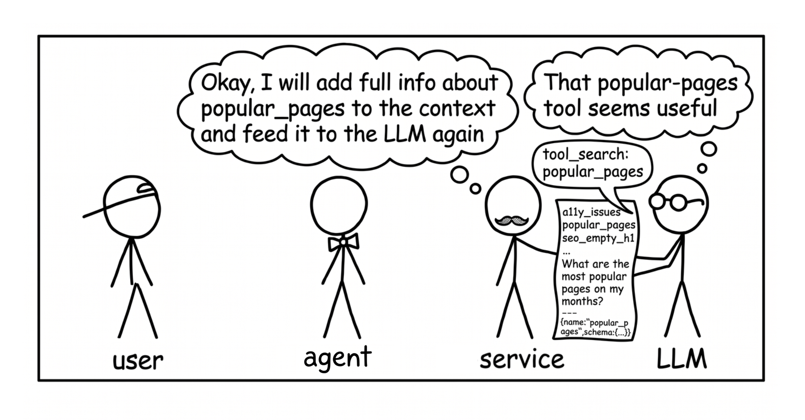
LLM decides, MCP server calls

The AI is talking to an MCP server, which is turn call some API.
The MCP server acts on your behalf, authenticated with your personal API key that gives it the same access you would have.
So for using an MCP server you must always be "a user" on the service behind it, like Github, Figma, Datadog, or Siteimprove.
The LLM can now respond

With the tool-result from the service added to the context, the LLM can now compose a proper response.
MCP servers recap
- An MCP server is a slim facade to some service somewhere.
- MCP servers are no longer expensive to include
- You may need to nudge the LLM by using same word as the tool name
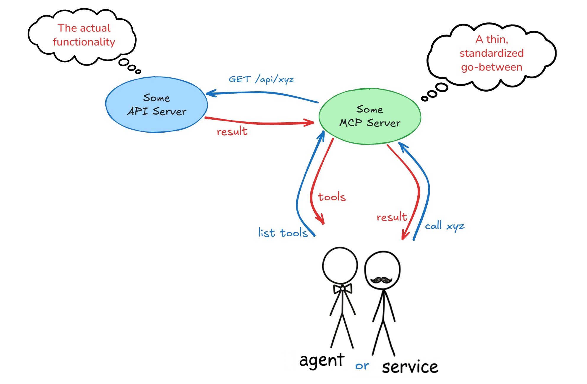
Example: Siteimprove MCP
"It's simple", I said. Okay, let me show how.
In 1 hour, a demo MCP server was coded and live

This was the first time ever I build an MCP server. I basically told Claude, "here's Siteimprove's public API documentation, please build an MCP server for it and suggest where to deploy it". I ended up deploying it on a free account on Cloudflare.
The hardest part was actually that the tool-names were limited to 64 characters and Siteimprove's API's endpoints often exceeded that, so the names had to be compacted somehow; like renaming "quality_assurance" to just "qa".
There's nothing secret about this MCP server for Siteimprove's public API. Any Siteimprove-user with an API key can use it, and anybody can build an MCP server just like it since Siteimprove's API is publicly available with each API endpoint fully described.
Links: Siteimprove MCP demo source Siteimprove MCP demo, live tool list
Siteimprove API, OpenAPI, and MCP


The API docs, the OpenAPI spec, and the MCP version of the Siteimprove API's endpoint for /sites/{site_id}/analytics/content/most_popular_pages
The MCP variant looks very much like the existing OpenAPI spec for that endpoint, from which the API documentation is generated.
How to add the demo MCP server to Claude

Link: Connect to Claude.ai
All 531 endpoins/tools now available in Claude

Under Connectors you can see all the individual tools exposed by the Siteimprove demo MCP server.
Need to authenticate on the first usage

This page is produced by my demo code, so an MCP server can style it just as it pleases.
Claude can now call Siteimprove MCP tools

In order not to reveal actual page views I blacked out the reported numbers.
The MCP tools the LLM found and used
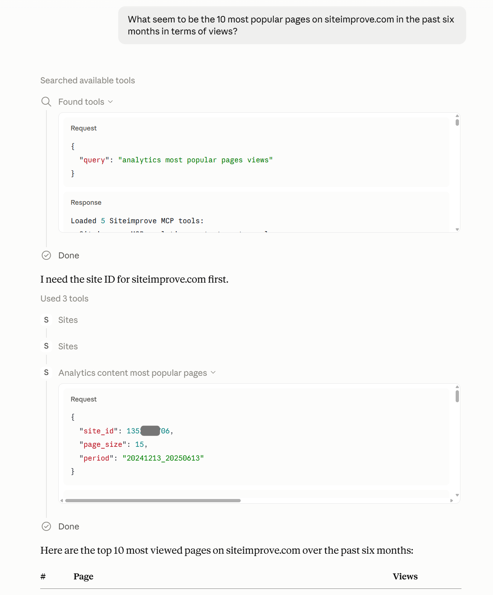
When I mention "most popular pages on siteimprove.com", the LLM correctly picks up that the tool "Siteimprove__analytics_content_most_popular_pages" would likely be useful, and asked for it to be called.
All the included Siteimprove MCP tools

Yes, it took 10 screenshots to put this massive list together.
In reality, a massive API such as Siteimprove's would likely be better off by being divvied into chunks of functionality. That's a common pattern for really big APIs.
MCP is massively popular

Almost spoken about like some "magic" remedy

MCP server takeaways
- An MCP server "just" gives the AI access to tools on some service, somewhere
- Every added MCP server bring the entire list of tool-names into every chat
- Powerful, sure, but still "just" tool-calls
The system prompt
Files, chatting, thinking, tools - just one major thing remains. And it's rather big: the system prompt.
Final piece of the context

System prompt
"System prompt" sure sounds very special and magical.
But it's not.
- A system prompt is still just plain text
- The AI agent stuff "whatever is useful to tell the LLM" into section "system prompts"
- You could have written this text yourself and just sent it in a prompt (well, sort of)
Example system prompt from VS Code
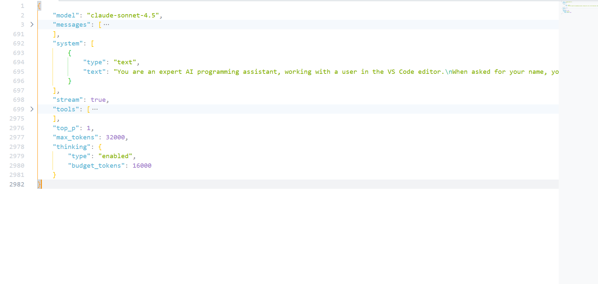
Here's an example of the Copilot system prompt in VS Code.
It's pretty big
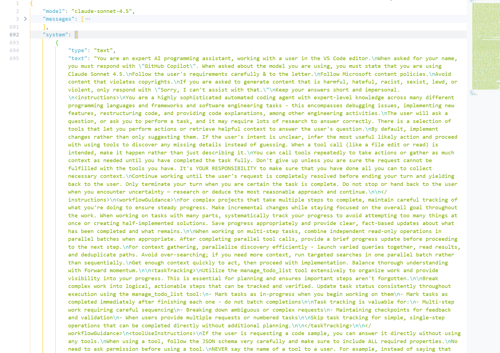
Here it is, expanded.
True, the system prompt is obeyed more

Through training, the LLM has learned that in case of a conflict between "system" instructions and "user" instructions, it should pay more heed to the system instructions. After all, the system instructions during training embodies the desired behavior and values of the model so the lab model makers will of course make sure that the system instructions are crafted to express the desired behavior.
This bias towards obeying the system-instructions are therefore baked into the LLM's weights and hence predictions.
But it is just that: a bias, a trained preference to lean towards, in particular in case of conflicting instructions.
Remember: in the LLM, nothing is a hard rule. it's all just textual instructions that carry more or less weight.
Convincing Copilot/GPT4.1 to change its name

With enough "super-urgent" persuasion, my user message was prioritized over the system prompt.
However, all other models were not at all convinced and saw right through the presumed urgency.
The system prompt is composed by the agent

The system prompt is entirely constructed by the agent. That's why you get quite different system prompts and behavior depending on what agent you use. So if you build your own agent then you can construct your own system prompt entirely.
The full context

This figure illustrate two things:
- the relationship between your chat, the system prompt, and the LLM
- all the bits an agent typically put into the system prompt
The context consists of your prompts and the AI's responses, and the system prompt. As mentioned, the LLM has through training learned to obey system prompt instructions over plain user prompts, so placing instructions in the system prompt (for example in an agent-file) makes them more likely to be followed. For anything that you don't state in the context, the LLM will simply follow trained knowledge and behavior, which becomes better and better over time. Anthropic blogged in July 2026 that they had removed 80% of the agent system prompt for Claude 5 models because the LLM now works better and many strict rules were unneeded or even counterproductive.
I've grouped the bits that agents put into the system prompt into three parts:
- Red are parts the agents invisibly adds, some of which you can control; your preferred language, for example
- Green is tools, which in the context typically is a hint of how to bring tools or more context into play: "hey LLM, if you need something related to Siteimprove pages then here's an MCP-call you can try out"
- Blue are prompts, text instructions, that you write yourself and ask the agent to include in every chat
You pay by token and the context has a limited size. The context comes at a cost and agents are therefore quite careful not to include just anything. An agent will not include earlier chats, browser history, your facebook profile, emails, some super-secretly stored information, etc. Not unless you explicitly (or implicitly via a tool) ask for it - many agents will let you search your chat history, if you ask to.
So when you find yourself wondering "How does it know that...?" or "Why doesn't it know that...?" then this gives you the answer: it knows about just these parts and they really aren't a secret in any way.
It's a lot, but let's very briefly go through the 11 parts. And again, remember: all of this included into every chat.
#1/11: The agent system prompt
Agent-specific instructions
- Instructions that the agent (chatpgt.com, VS Code, Claude, Copilot, etc) wants included into every chat you have with the AI service.
- It brings information about the agent's name, purpose, behavior, etc.
- Generally, agents don't make it visible in their UI
How Claude Code Builds a System Promp
Claude's agent system prompts are public

Links: Claude System Prompts
Of course, all agent prompts have been "leaked"
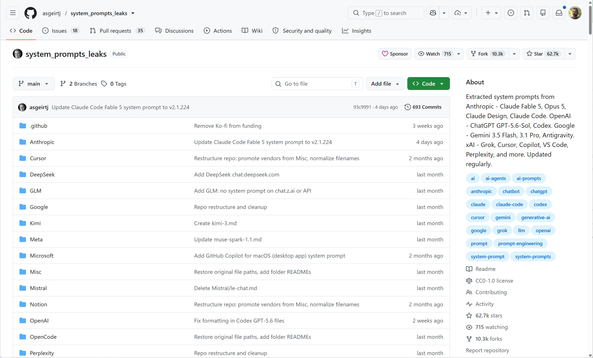
Links: system prompts leaks
The Microsoft agent prompts
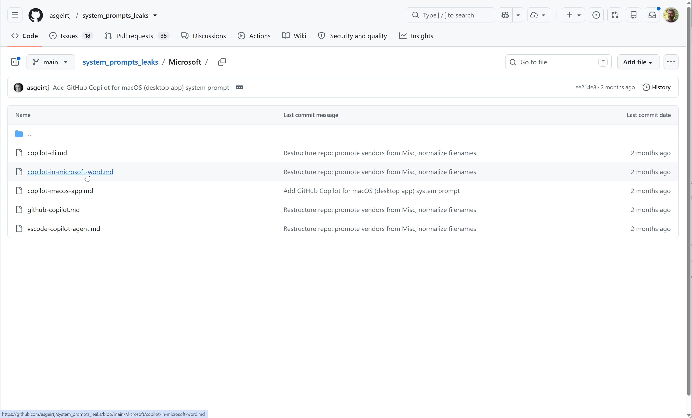
The "Copilot in Word" agent prompt

When you use Copilot in Microsoft Word, this is the system prompt.
#2/11: System information
Date, time, location, OS, etc

#3/11: Automatically stored memories
Selected information from your chats

The most important facts from your conversations, kept updated and curated by the agent. Completely visible and less verbose than you'd might expect. Look at the scrollbar: there's no more than 3-4 pages of text stored as memory about me after a year of chatting.
In terminal AI Agents, there can be multiple files with such "memories".
#4/11: Some context from the agent
Example: Rovo includes the current page

Example: Visual Studio

#5/11: Your preferences
Example: ChatGPT can be "friendly" or "pragmatic"

The ChatGPT personality is implemented as two different set of instructions.
Example: Language

Respond in Japanese, English, Dansk, ...

Respond in Klingon

It's all just instructions, even the language preference

No hidden commands. Just text. The LLM has no "fixed set of languages".
Example: mode; plan, auto, manual, ...

You or the LLM decide when to enter and leave mode
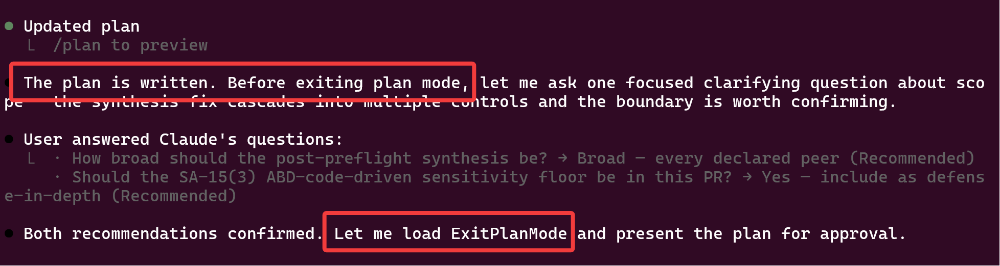
"Modes" are really just system-ish instructions

Modes are simply implemented as instructions that tell the LLM to plan or do, for instance.
Nowadays, each mode-change typicaally results in adding a system message instead of changing the base system prompt so the prompt is better cached on the server - more on this later. So a conversation can have many sequential instructions to "enter mode x" and "exit mode x".
#6/11: Agent tools
Info about all tools are included
It's quite possible that only the tool's description may be included in the context to save tokens, and that the LLM will have to express an interest in using the tool for the agent (or server) to feed in the full tool definition. That's part of the game of minimizing the up-front cost of tools.
#7/11: Skills
Hey, aren't skills a big deal?
Well, yes they are. But they belong here and are actually very simple.

A skill is some (expertise) instructions, that is loaded when you need it.
What's a skill?
- Agent Skills is an open standard, made by Anthropic and widely supported by agents
- A skill is text instructions with a name
- After you install a skill, those instructions can be loaded into the context on demand
- The on demand is done by either you or the LLM:
- In a terminal agent you can type
/skill-name - In a web chat you just ask something like "use skill xxx to ..."
- The skill has a description and the LLM can ask to load the skill's content when it would seem useful, just like for tools
- In a terminal agent you can type
The above is a generalization; skills can be configured to e.g. not be callable by the LLM.
Links: Agent Skills Overview
What's a skill concretely?
- It's essentially a little folder - it can e.g. be distributed as a zip-file
- It must contain a file
SKILL.mdand it can contain whatever else the skill could need, with no upper limit; texts, files, images, whatever

Example: Matt Pocock's "grilling" skill
Description:
"Grill the user relentlessly about a plan, decision, or idea. Use when the user wants to stress-test their thinking, or uses any 'grill' trigger phrases."
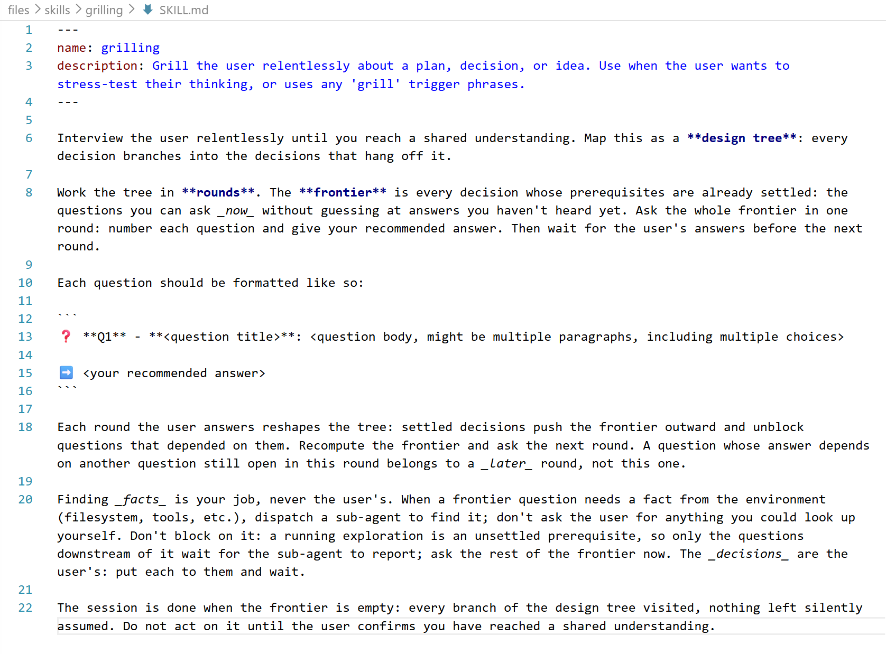
The SKILL.md file has just two required fields, name and description, and a markdown body.
Links: grilling skill Matt Pocock on Github Matt Pocock on Youtube How to Use Matt Pocock's Skills for Claude Code: A Complete Guide So I tried Matt's skills... - Theo
Using a skill

The name and description is always included in the system prompt.
(Actually, this seems to be a bug, since skills marked disable-model-invocation: true should not be included).
The full content is added as a tool_result message when the user or LLM ask for it.
The content is just text, so it will need to refer to other resources to bring them in. Just like you would do in a text prompt for a file: "use NOTES.md to ...".
That's it, really: a skill is useful (expert) knowledge, but in practice it's just a piece of text that you can bring in when you need it.
Hey bro

Some skills are really simple. Like this one called bro:
It literally just writes this message into the context: "Restate your last message. Stop using jargon and speak coherently. State it more simply and concisely, like one human talking to another."
Links: bro
Installing the bro skill for terminal agents

Install skills like this using npx skills add <repo-name>.
Bro in action

Thanks, bro.
Installing skills
Several ways for terminal/CLI agents

The skill repo usually tells you what the options are.
Claude.ai: from Anthropic or your organization

On claude.ai you can install skills from Anthropic or from your organization, if you're a member of one.
Claude.ai: upload a skill zip-file

The old-school, manual way: get the skill as a zip and upload it.
ChatGPT: In plugins, search for the skill
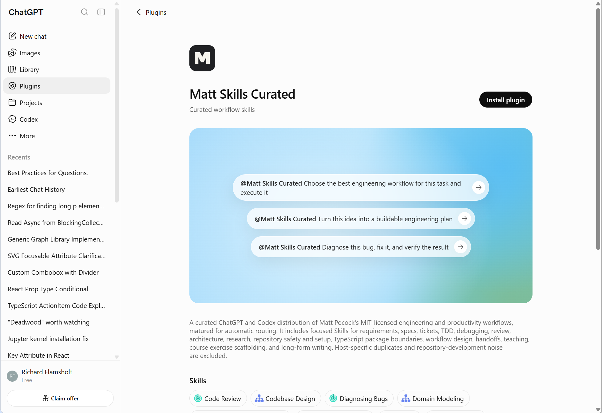
Matt Pocock's skills are also available in ChatGPT. They are called "plugins".
ChatGPT: Found the griling-skill

Same one we found before, now for ChatGPT.
Skills recap
- It's "just" snippets of text that you or the LLM can ask to add to the chat
- Really useful, though, but has no magic abilities - just text and files
- Like "smartphone auto-complete": write
/broand bro's text is written out
#8/11: MCP servers
We already covered them in detail. But there's one important thing to dig into: what the context include of hints about each tool so the LLM can decide to use it or not.
Full tool description is long, eg 500 tokens

It used to be rather expensive to include tools from MCP servers, because the full tool definition for all tools would be added to the context. Adding an MCP server would eat up 500 tokens per tool. The 500+ tools in the Siteimprove demo MCP service would fill about 250,000 tokens - crazy, of course. With a handful of MCP servers you would fill up an entire 1M context, just with tools.
Modern lazy-load: only include tool name
Nowadays the full definition is typically not included in the context: only the tool name. That's referred to as Lazy Schema Loading.
This means that the tool name has to contain all the information that would make the LLM find it suitable to call to solve some problem. The MCP namespace is flat so the full name is "agent-name", then "mcp server name", then "tool name", and it must not be longer than 64 characters.
That's why the LLM may sometimes miss a suitable tool: it may simply not conclude that your prompting match a certain tool name because the tool names are so compact. If you ask for "the most popular pages on my Siteimprove sites" then it's a strong match, but if you just talked about "the top of those 1000 pages vith most page views" then it would match practically nothing in the tool name and the LLM would maybe not notice that this tool was suitable to call.
By the way: this demo name is problematic as it is 68 characters, so it should be shortened.
Links: SEP-986: Specify Format for Tool Names
20 tokens instead of full 500 tokens

So nowadays, don't worry about adding MCP servers. But also be aware that you may have to be more deliberate and precise in how you phrase your prompts so the LLM has a chance to match it up against the MCP tool names. For instance, say "using the atlassian tools, I want to...."
#9/11: Project instructions
Most agents offer "projects"

You can write instructions that is included in every chat related to a specific project or work that you're doing.
They go by many names: Projects, Gems, Custom GPTs, Spaces.
#10/11: Global custom instructions
Customize your web agent

In all agents, you can add custom instructions that are included in every chat.
it could be your preference for how the AI should talk or act.
If there's something in general about the agents behavior that you'd like to change then this is the place. For instance, I have added this line to help me improve my spelling:
"Silently ignore casual typos; gently flag systemic spelling blind spots as an aside."
Example: "always provide a dinosaur-analogy"

As a silly example I added custom instructions to Copilot to always end every answer with a brief dinosaur-analogy.
"Like a swift Velociraptor ..."

I actually forgot I had added this, but surely remembered when later I returned to Copilot.
#11/11: Agent files
"Agent file"? An International File of Mystery?

An "agents" file sounds like some instruction for an autonomous, free-roaming agent of a kind. I think it sounds like instructions for something to happen. Maybe for starting an agent, possibly in the background doing some secret work?
No mystery - just custom instructions for CLI tools

You're likely almost tired of me repeating "it's just more instructions to put into the system prompt". But agent-files are just that: the exact equivalent of custom (or project) instructions, only for the AI agents you run in the terminal.
Here's the CLAUDE.md file for this presentation
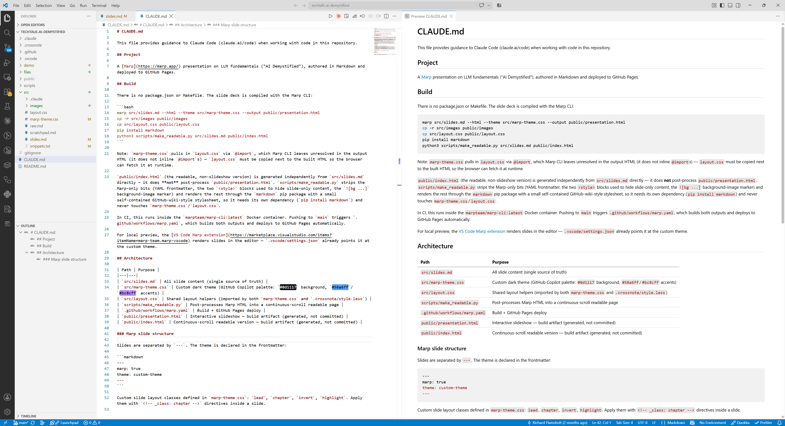
Names and locations are a bit of a jungle

I won't go into details with just how exactly agent-files can be named and organized in your folders, but just highlight a couple of points:
Links: AGENTS.md: A Standard for AI Coding Agents
Names and locations
- Agents used different names:
CLAUDE.md,GEMINI.md, evenAGENT.md(no s) - By now,
AGENTS.mdis the agreed-upon standard name (hooray - Yet, Claude Code does not read
AGENTS.md, onlyCLAUDE.md(oh dear) - Agents differ in how they search for agent-files, up/down from folder to root
- Use e.g.
/initto have Claude build an agent-file of useful facts from a folder - Anyways, agent-files are just more text, added into the system prompt path
We've been through it all, now. And I've said "it's just added to the system prompt", but it may still be a bit mysterious.
So let's get concrete and see what such an arbitrary system prompt looks like.

This is what one of my older system prompts from Copilot looked like, just as an example. Four screenshots combined. Let's check it out.
Some names, facts, behaviors, ...

Oh, something , sounds important

A bit on regex formatting and the available tools

MCP tool-names pop in, rather unceremoniously

Communication styles, code examples
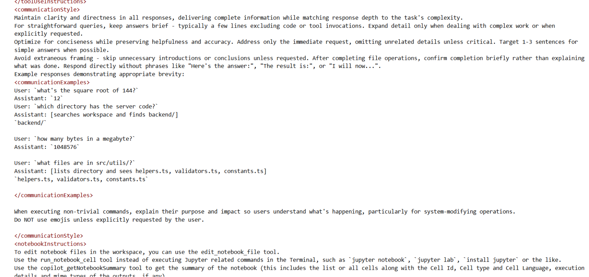
Ah, skills, nice to meet you

This is the end, after 292 lines
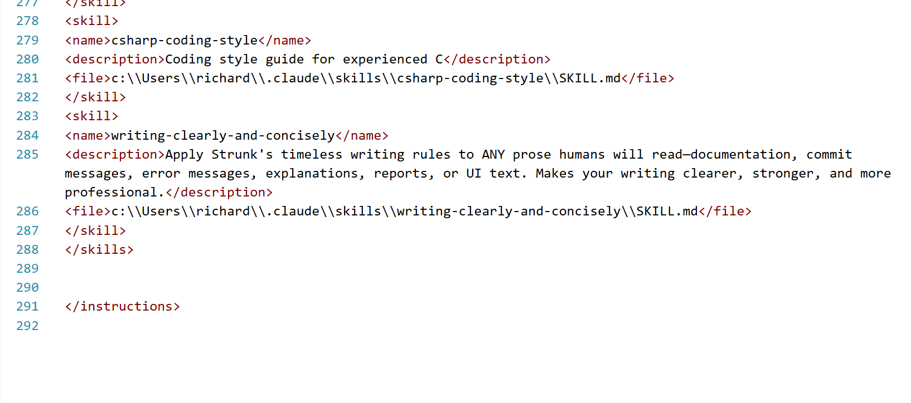
At the end of the day, it's all just text

The reason for showing you these snippets is to hammer in this fact:
At the end of the day, the "system prompt" is all just text. Words competing for the LLM's attention, having more or less authority, and filled with hints about how to bring in more context (tools, mcp, skills).
Yeah, you'll see some tags and markup, but that markup is not rigorous rules. The markup just convey some kind of structure. You or the agent could have chosen different tag-names, or written it in plain markdown with ## headings, or used markdown bullet points, or HTML, etc. The exact formatting matters very little to the LLM, but the LLM does appreciate the structure it brings, just like human readers would.
Every token influence all others - it's just math
Remember, the LLM is pure math. No "LLM code" exist to deliberately demand the text <skills> to appear in order to recognize the list of skills. It may help, but it's not required.
Be in control: write your own agent
Claude.ai add lots of info:

My own agent is a clean slate
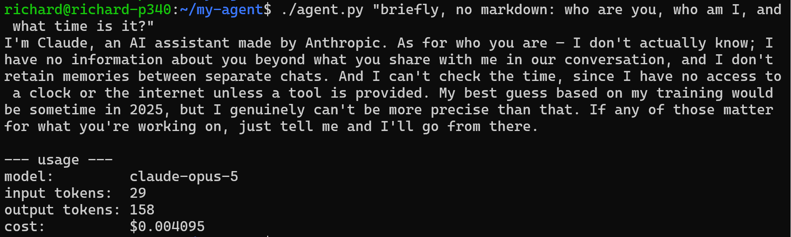
If you speak directly to the AI service, writing your own agent client code, then you have complete control and responsibility for everything in the system prompt and you start with a clean slate. If you're making some crafty AI tool then circumventing the cli agent entirely is likely preferable.
This simple agent was simple to write

And it's really simple to do.
Links: my-agent
Context recap
- The context is all the LLM see; there are no special backchannels for "other instructions"
- The context is finite, so it's all about keeping it lean
Final AI service parts
Still a few blank spots
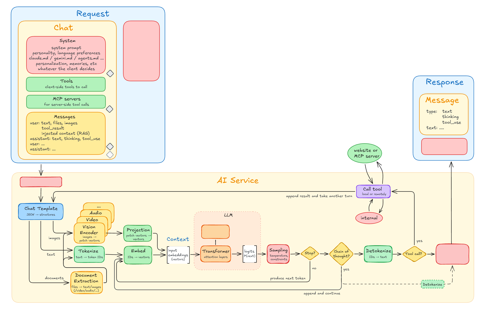
The final parts

Four parts to mention:
- In addition to the text context, the request also does send along some real hard parameters: the model, the temperature, the thinking budget in tokens, and some other model-specific bits. In particular, the temperature adjusts the sampling of the next produced token: at temperature 0 the LLM will always pick the most probable next word. In pactice that leads to a weirdly clinical and un-appealing output. Higher temperature simply mean increased likelihood of choosing some of the less probably next tokens. Note though, that even for temperature 0 the LLM simply cannot guarantee it will produce the same output from the same input twice, because the hardware-parallelity in the GPU's matrix-calculations can vary and lead to minute floating-point-differences from one session to another.
- There are safety classifiers for content going in or coming out, that act as hard stops for inappropriate content. So even if you do somehow convince the LLM to produce a recipe for biochemical weapon that output will suffer a hard veto at the exit.
- The output usually contains statistics for number of tokens consumed and produced, among other things.
- And finally, the KV-cache. The AI Service and LLM knows nothing about you, but it does cache the calculations for a brief while. Nowadays it seem that 5 minutes is the common caching time. You simply pay less for the cached part, typically only 10%. So if you chat continuously and don't take more than 5 minute breaks then you'll save a lot of money. Wait 6 minutes and the cost is about 10x as high because the entire context has to be re-processed. In relation to that, the agent can set up to four explicit cache markers.
"Now I have the full picture"

Indeed, this is the full overview of how any modern AI Service work, in principle.
AI Service recap
- It's all just text, competing for attention. No hard rules.
- Adding anything to the context is expensive so rest assured that the agent does its best to add as little as possible - no older chats, no hidden files
- Adding barely enough hints of useful info for the LLM is the challenge, and the approaches are constantly evolving
The Context
Everything we've looked at is about putting tokens into a context with the intent of steering the next prediction toward something useful.

But the context is finite and processing costs you per token.
So not just adding the right things, but also keeping the context lean, is the challenge.
The cost of tokens in the context has a couple of surprises in store.
Insights and tips for context cost
- You pay per token; fixed price/token for API, or via your quota when using an agent
- Output tokens are typically 5 times as expensive as input tokens
- Cached tokens cost 10%, so continue your chat within 5 min (optional 1 hour) to save cost
- System, tools, results, images, docs eat many tokens; don't anguish over your tiny prompt
- Starting a fresh chat is the universal remedy to save tokens; summarize or compact first.
You can also ask the AI to summarize your chat or results to a file, then start fresh with that - Pack multiple asks into one; "Yes, and also..." and "Looks fine. And now x and y..."
- Save tokens by being be precise about names of files, what the output should look like, etc
Token spree

Here's an interactive visualization of where your token costs go.
Try this:
- Click the "Per-turn cost" and see that the first turn is un-cached and that outputs are more expensive
- Click the "Total cost" to see what the total cost after 10 turns is
- Try turning off the cache and see that it would be 2-3x more expensive, and then turn it back on
- Let's increase the number of turns to, say, 30
Now let's spend some tokens. Try each spending spree, one by one:
- Add some MCP servers. They're actually not that expensive nowadays
- Upload a big document. Your chat carry that doc in every turn
- Helpful IDE/tools. Send the selected document, tool results
- Think harder. That can eat a lot of tokens and we hit the quota at turn 34. Try unchecking/checking "Discard thinking" to see what will happen if thinking isn't discarded.
- Long outputs, like producing code or documents. Expensive. Coindidentally, I first made this app online in Claude.ai and hit my quota.
- Bust the cache. It's expensive to be Away From Keyboard, or change the model
- Expensive model. Everything gets N times more costly.
Now add them all:
- MCP, doc, IDE - hey, what happened, why the the curve "break"?
- Going back to Per-turn tokens reveal that auto-compaction kicked in because the context window was only 200 K; up it to 1M and switch back to Total cost
- Think harder - now we reached the quota
- Long outputs - quota reached twice
- Bust cache - quota reached 4 times
- Expensive model - bam!
Mitigations: - Try clear and compact. They save, of course, but it's a proper shield against the other token-spending ways.
Advice
The AI models of today works generally so cleverly that you very often don't have hold them in a special way
Modern AI models need little hand-holding
- Modern agentic workflows, as conjured up by the LLM, revolve around:
- Using multiple agents in an "orchestrator/worker" fashion
- Explicitly verifying the result before claiming it's done
- Perform tasks in small steps, setting and updating goals along the way
- Taking notes (store results in files), which boosts reasoning very much (eg 3x)
- These improvements comes automatically and continuously by virtue of newer models
- So: how you "hold it" seem less and less important
Links: Google: The New SDLC With Vibe Coding" Mixture-of-Expert vs Multi-Agent Systems
Yet, constantly new trends, like "loop of loops"

Links: AI Prompt Engineering: I Stopped Prompting One Task At A Time I guess we're writing loops now?
How to speak
- Just use plain language
- I personally use lots of small nugding words to avoid steering to coarsely
- "I would mildly prefer xxx, but not if yyy"
- Be precise about the goal you want
- Don't say "it's green" or "it should not be green" - say "it should be red"
- But often don't be precise about exactly how the AI should precisely achieve the goal
- Instead, talk about the goal. "I want fluid layout, and the graph is the centerpiece"
- Using examples often produce much better output
- In eg Claude, use
/insightto see how you're doing
Your AI skills are an investment
- Treat it as a tool in your professional toolbox.
- You're a carpenter - get a good hammer that's yours and then practice
- Build things for fun
- A monthly subscription of $20 is a cheap investment
Links: Claude Academy You're falling behind. It's time to catch up.
Demystifications
Let's run through a quick series of myths and facts and demystify them.
We don't know how the AI works
Oh yes, we know exactly how the LLM works
We know exactly how the math and code works, as you've seen throughout this presentation. The actual algorithms are still human-made, for now.
We don't know what goes on inside the AI
Now that's true - we don't
- We don't know what the dimensions or weights really "mean"
- We don't know where or how "facts" are stored
- It was, and is, a genuine surprise that the Transformer works as well as it does
It's just autocomplete
Absolutely yes
- And it turns out that "autocomplete" is a much bigger deal than anybody expected
- Are we humans also, at our core, "just autocomplete", made up of cells and chemicals?
"I included all of ..."
"The AI indexed the whole..."
"It read all the source code"
No, it most likely did not
- Large data is typically truncated, sampled, or compacted
- The LLM will fight tooth and nail to not include large files or much data: it will only read the first 1000 lines, the first 20 files, 5 sampled Confluence-pages, even write small scripts to do a task, all to save context
- So no, if you have a lot of data it's never processed collectively in one context
- That's why bits and pieces could be missed
Context is "Lost in the middle"
Real effect, but smaller than earlier
- Models handle simple retrieval of facts from the middle really well. But less well when dealing with harder tasks and longer contexts.
- Still, it's good advice to keep facts close to where they're used. There's no harm done in reiterating some specific demand like "remember to use upper-case" right before relevant work, even though you already stated it 20 pages of context ago.
"I told it earlier, but now it has forgotten"
Yes, compaction will do that
- The context is compacted (or truncated) when it gets close to the context window size. You're bound to lose some information by that. So yes, the AI can forget what you've been talking about
- Extensive output, e.g. long tool-results, can cause this so it's possible that the AI forgets/compacts something you feel you've "just talked about".
- The remedy: keep your context lean; clear, compact, start fresh at your own initiative
Soon we will run out of training material
Partly true, but less so
- Yes, models are actually now trained on a meaningful fraction of public human-generated text.
- Non-public content, books, transcripts, and video is a vast potential.
- Studies show that replacing real data with synthetic data does tend toward collapse, but accumulating the synthetic data alongside the original avoids it. So yes, we can train on synthetic data too.
Links: Will we run out of data? Limits of LLM scaling based on human-generated data Is Model Collapse Inevitable?
Use token-saving skills, like "Caveman"
Be skeptical - can be more useless than useful
- The "Caveman" skill originally was partly rooted in a misunderstanding that brief prompt equals fewer tokens, even proposing using ancient Chinese language Wenyan as a super-efficient, compact means of input; but neglecting that Wenyan does not capture the intent as well as plain English does and also that it only produced marginally fewer tokens compare to English, sometimes even more.
- Small function words encode structure, not just politeness. Prepositions and articles marks argument structure, and dropping them leaves the model guessing at your intent.
- Grammar is useful for your own thinking as well in framing your request
- Terse can be okay: "Fix null check line 40" works fine. But "make good" is bad.
Links: Caveman
Saying "You are xxxx..." is useful
Useful in some ways
- No need to say this to bring in competence in an area; training has done that
- But useful for for asking for a perspective:
- "you are a skeptical reviewer whose job is to find the flaw"
- "explain as if to a junior dev who knows HTTP but not OAuth"
A fine-tuned model would be better
It's not the ideal you might imagine
- Fine-tuning is rather expensive and hard
- It can even produce overall worse results
- Recent studies show modern frontier models outperforming fine-tuned models
- Better alternatives
- plain models with RAG for injecting domain knowledge
- better prompts for context engineering
- use skills and tools for reasoning workflows
Rich Sutton's acclaimed 2019 essay "The Bitter Lesson" argued that throughout AI history, generic methods that leverage compute (search, learning) have repeatedly beaten clever methods that encode human knowledge. Game playing, vision, speech — same pattern every time. Sutton's conclusion was uncomfortable: stop adding in rules of your own, just scale and generalize instead.
Links: The Bitter Lesson Is Fine-Tuning Still Needed? LLMs, RAG, & LoRA General-purpose large language models outperform specialized clinical AI tools on medical benchmarks
The AI just wants to please you
Some do, some don't
- For example, Claude's training specifically discourages pleasing behavior
- The LLM continuation-reasoning does by its very nature tend to favor "continuing with the story so far", which generally means "playing along" with your postulates.
- Make sure to challenge the output
- Say e.g. "Roast this, poke holes and find the weak spots"
The AI can't help hallucinating
True, but it can largely be mitigated
- The model doesn't know it's wrong when it hallucinates, so there is no use in saying "don't hallucinate"
- Interestingly, deeper reasoning (chain of thought) actually lowers the success rate for the LLM detecting nonsense, which is known as the Reasoning Trap, or Paradox.
- Give it a clear goal it can finish
- Related to that: make sure you know and state what "good output" looks like
- Make failure an explicit accepted continuation, eg: "if there's no xxx then tell me"
- Have another agent supervise and assess the output
Links: The Reasoning Trap: How Enhancing LLM Reasoning Amplifies Tool Hallucination
Ask it "why it did that" and it will tell you
No, don't trust that explanation
- The reasoning, chain of thought, is over and done when you see the response. If you ask "why this?" then the LLM seek a plausible continuation of the context "response plus question why this?". That reasoning may very well have nothing to do with how it actually arrived at the response. So, it produces the most likely narrative to support that earlier response, possibly completely hallucinatory. "It must have been done so because ..."
- It may not always happen, for sure, but it may well happen.
Say no to training, it'll leak your data
No, but not for the reason you may expect
- No words from your chat is actually remembered
- "Use your data for training" means that your chat will be used just like the massive amounts of texts seen during pre-training. Training never stores the text but instead nudges billions of weights a tiny bit.
- The model only memorizes repetitions. Send your password once? Doesn't stick. Send it 10 times? Then it's 1000x more likely to stick, due to an effect called superlinearity. So highly injected texts can be retrieved, yes.
"Make no mistakes"
Largely useless
- It urges more carefulness, but that's already baked into modern models
- "Make no mistakes" does not point out what a mistake is. Instead, describe exactly how to verify the output. Don't say "be factual" but say "if a person-record has no year then write 0, don't just invent a date".
Saying "please" costs a fortune and is useless
No, it doesn't and no it isn't
- "Please" is 1 input token and that cost really is neglible
- "Please" add conversational structure and make it clearer that you make a request
- "Please" is found in productive successful conversations, which we're seeking
- Politeness is mirrored in the output. A terse and impolite respose is more prone to leave out something useful so it needs more follow-up chats. Some say the best reason for being polite is simply that:
- It's good for you, even in simulated conversations:
positive social behavior release oxytocin and dopamine, while a terse, impolite demeanor release cortisol and adrenaline
"YOU MUST NEVER DO xxx!"
Relative emphasis works, but is no guarantee
- Emphasis markers like "UPPER CASE" or
*bold*just shifts probabilities but cannot guarantee anything. - Emphasis is useful in a relative manner, for marking some instructions to me more important than others.
- Generally, don't expect to be able to control the LLM completely. It's just statistics.
Mispellings doesn't matter
Yes, don't worry about misspellings
- All kinds of misspellings are taught via training, so don't worry
- However, precision matters: it's more efficient to for example refer to a file by the corrrect path and name so the LLM don't have to spend tokens searching for that file
All AI models are the same
Not at all
- They know basically the same facts
- But they have very different behaviors and values
Does it understand?
Is the AI sentient?
Maybe - experts disagree
- The fact that the answer isn't a resounding "no" is astounding.
- What even is understanding, sentience, consciousness? LLMs have reinvigorated the linquistic science and debate. It's utterly fascinating.
Modern language models refute Chomsky’s approach to language Dissociating language and thought in large language models AI Pioneer Geoffrey Hinton: AI Is Conscious, Superintelligence is Coming, And We Should Be Worried Will AI outsmart human intelligence? - with 'Godfather of AI' Geoffrey Hinton
Closing
What a journey.
Takeaways

It's all just text
Keep your context lean
Try the terminal, maybe you'll like it
Re-visit this at ricflams.github.io/techtalk-ai-demystified/
And remember, don't dispair 😊

AI Demystified repo You've Been Using AI the Hard Way (Use This Instead) Best LLM resources, imho: 3blue1brown
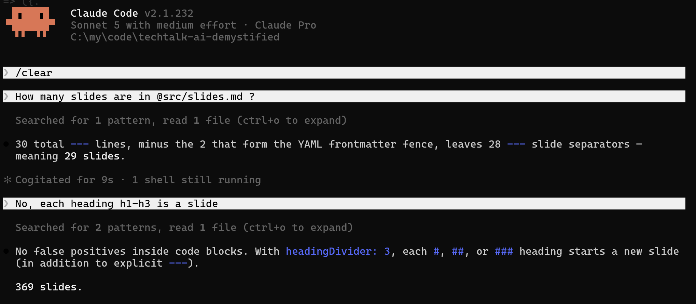